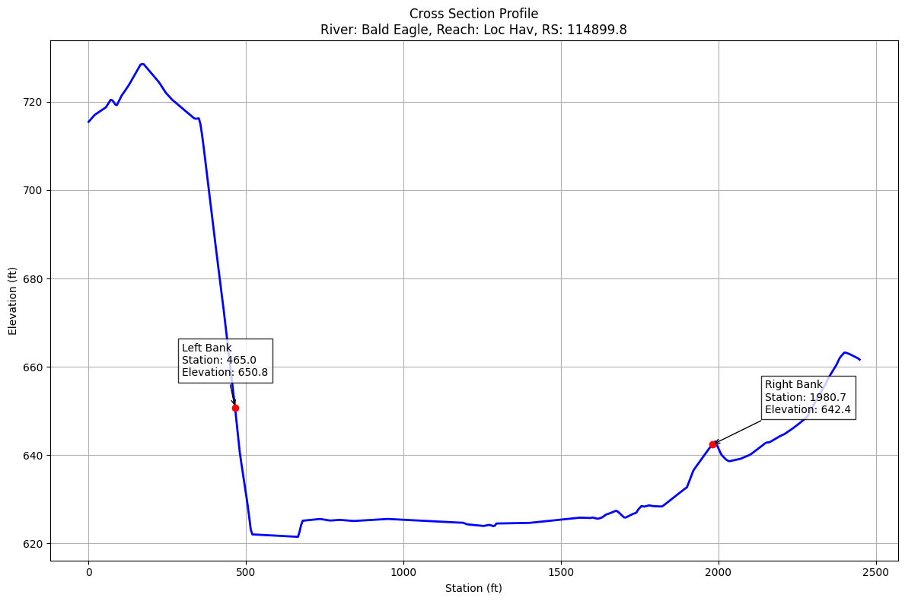
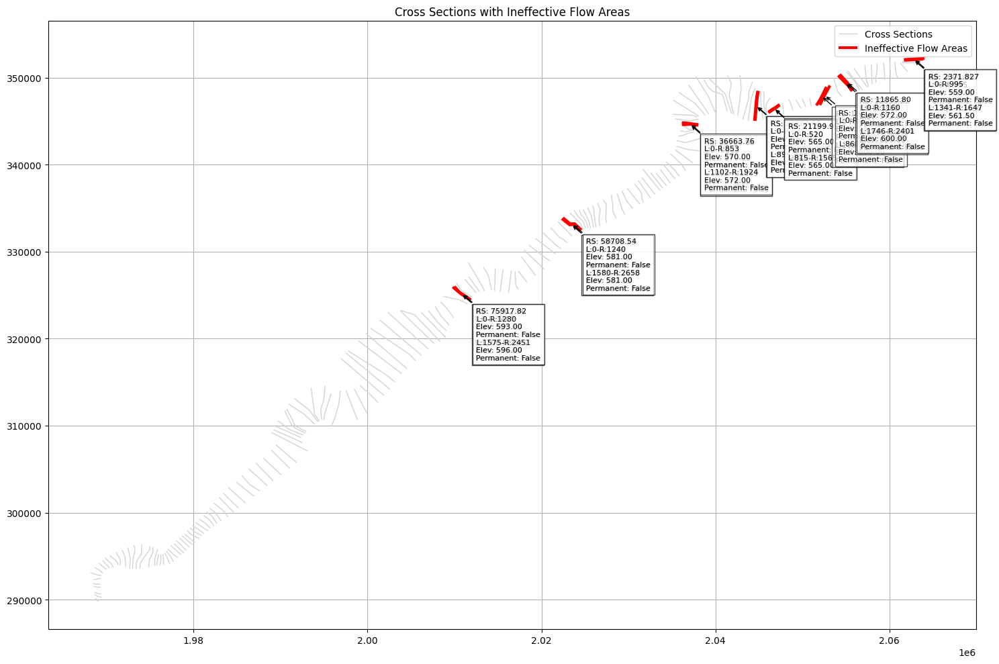
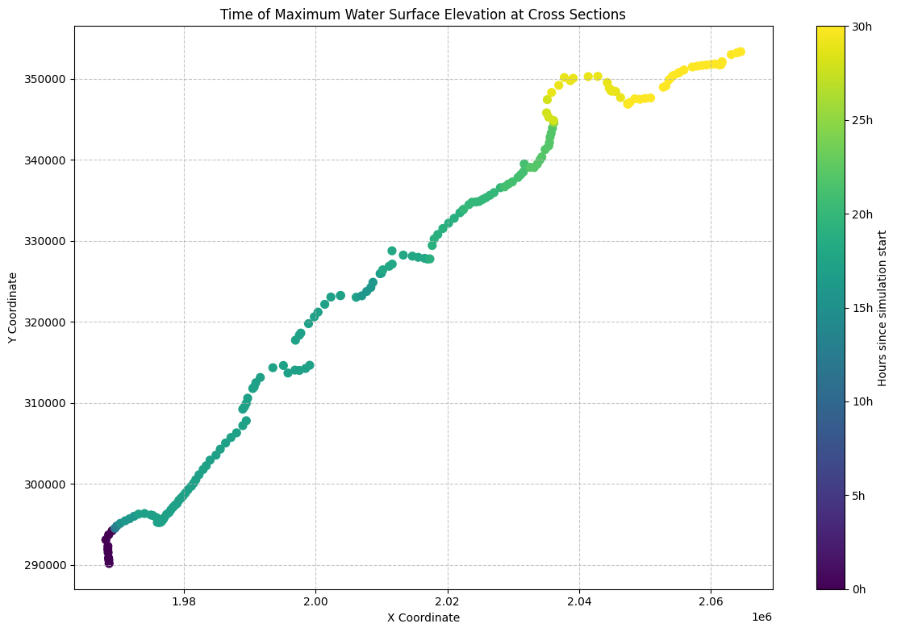
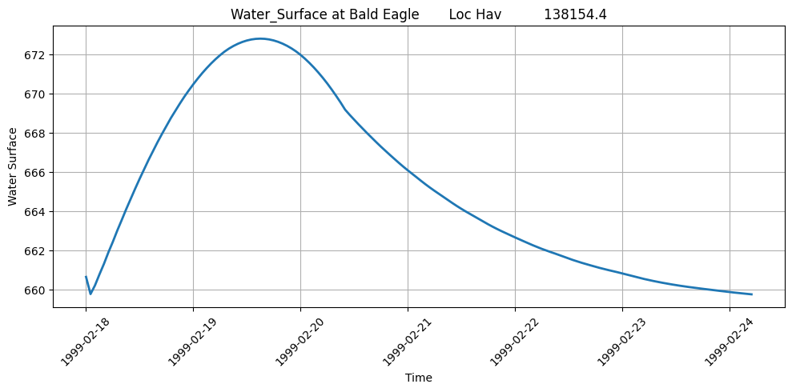
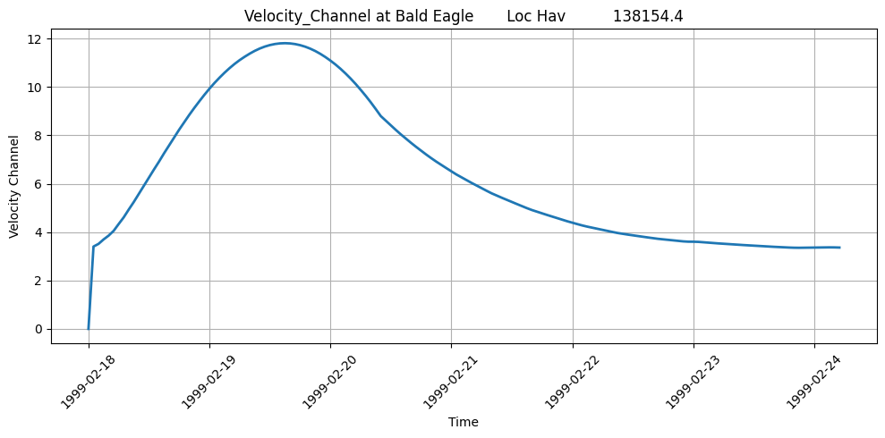
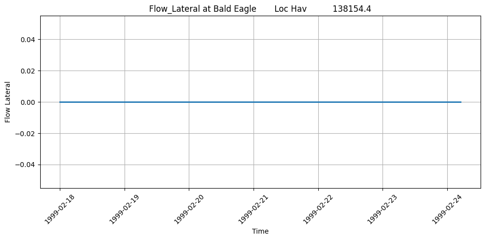
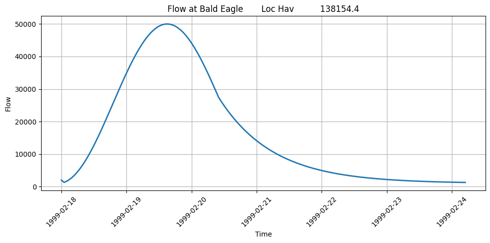

1D HDF Data Extraction¶
OverviewThis notebook demonstrates extracting and analyzing 1D unsteady flow results from HEC-RAS HDF5 output files. You'll learn how to:- Extract water surface elevation (WSE), velocity, and flow time series from cross sections- Access 1D-specific result datasets in the HDF5 file structure- Validate extracted data against expected hydraulic ranges- Create reviewable outputs for engineering QA/QC### HDF5 File Structure for 1D Unsteady ResultsHEC-RAS 6.x stores 1D unsteady results in HDF5 format with the following hierarchy:/Results/Unsteady/Output/├── Output Blocks/│ └── Base Output/│ ├── Unsteady Time Series/│ │ ├── Cross Sections/ # WSE, velocity, flow by XS│ │ ├── 2D Flow Areas/│ │ └── Storage Areas/│ └── Summary Output/│ └── Cross Sections/ # Max WSE, velocity, etc.Key datasets:- Water Surface - Elevation in feet (or meters)- Velocity - Average channel velocity in ft/s (or m/s)- Flow - Total flow in cfs (or cms)### Reference DocumentationFor detailed information on HEC-RAS HDF5 output structure:- HEC-RAS User's Manual, Chapter 9: Viewing Results- HEC-RAS Hydraulic Reference Manual - Hydraulic computations- HDF Group Documentation - HDF5 file format specification### LLM Forward Engineering PrinciplesThis notebook follows LLM Forward principles for hydraulic model analysis:1. Multi-Level Verifiability: Results are exported to CSV for traditional engineering review2. Visual Outputs: Plots generated for each extraction step3. Audit Trail: All extraction parameters logged and documented4. Human-in-the-Loop: Clear success criteria for reviewing extracted dataSee Engineering with LLMs for more on LLM Forward approach.¶
OverviewThis notebook demonstrates extracting and analyzing 1D unsteady flow results from HEC-RAS HDF5 output files. You'll learn how to:- Extract water surface elevation (WSE), velocity, and flow time series from cross sections- Access 1D-specific result datasets in the HDF5 file structure- Validate extracted data against expected hydraulic ranges- Create reviewable outputs for engineering QA/QC### HDF5 File Structure for 1D Unsteady ResultsHEC-RAS 6.x stores 1D unsteady results in HDF5 format with the following hierarchy:/Results/Unsteady/Output/├── Output Blocks/│ └── Base Output/│ ├── Unsteady Time Series/│ │ ├── Cross Sections/ # WSE, velocity, flow by XS│ │ ├── 2D Flow Areas/│ │ └── Storage Areas/│ └── Summary Output/│ └── Cross Sections/ # Max WSE, velocity, etc.Key datasets:- Water Surface - Elevation in feet (or meters)- Velocity - Average channel velocity in ft/s (or m/s)- Flow - Total flow in cfs (or cms)### Reference DocumentationFor detailed information on HEC-RAS HDF5 output structure:- HEC-RAS User's Manual, Chapter 9: Viewing Results- HEC-RAS Hydraulic Reference Manual - Hydraulic computations- HDF Group Documentation - HDF5 file format specification### LLM Forward Engineering PrinciplesThis notebook follows LLM Forward principles for hydraulic model analysis:1. Multi-Level Verifiability: Results are exported to CSV for traditional engineering review2. Visual Outputs: Plots generated for each extraction step3. Audit Trail: All extraction parameters logged and documented4. Human-in-the-Loop: Clear success criteria for reviewing extracted dataSee Engineering with LLMs for more on LLM Forward approach.¶
HEC-RAS 1D HDF Data Analysis Notebook¶
This notebook demonstrates how to manipulate and analyze HEC-RAS 2D HDF data using the ras-commander library. It leverages the HdfBase, HdfUtils, HdfStruc, HdfMesh, HdfXsec, HdfBndry, HdfPlan, HdfResultsPlan, HdfResultsMesh, and HdfResultsXsec classes to streamline data extraction, processing, and visualization.
Package Installation and Environment Setup¶
Uncomment and run package installation commands if needed
# Install ras-commander from pip (uncomment to install if needed)
#!pip install --upgrade ras-commander
# This installs ras-commander and all dependencies
# Set to false to disable plot generation for llm-friendly outputs
generate_plots = True
# =============================================================================
# DEVELOPMENT MODE TOGGLE
# =============================================================================
USE_LOCAL_SOURCE = False # <-- TOGGLE THIS
if USE_LOCAL_SOURCE:
import sys
from pathlib import Path
local_path = str(Path.cwd().parent)
if local_path not in sys.path:
sys.path.insert(0, local_path)
print(f"LOCAL SOURCE MODE: Loading from {local_path}/ras_commander")
else:
print("PIP PACKAGE MODE: Loading installed ras-commander")
# Import ras-commander
from ras_commander import HdfBase, HdfBndry, HdfPlan, HdfResultsPlan, HdfResultsXsec, HdfStruc, HdfUtils, HdfXsec, RasCmdr, RasExamples, init_ras_project, ras # Import all ras-commander modules
from pathlib import Path # Explicitly import Path for notebook use
# Additional imports
import h5py
import numpy as np
import pandas as pd
import requests
from tqdm import tqdm
import scipy
import xarray as xr
import geopandas as gpd
import matplotlib.pyplot as plt
from shapely.geometry import LineString # For cross section plotting
from IPython import display
import psutil # For getting system CPU info
# Verify which version loaded
import ras_commander
print(f"Loaded: {ras_commander.__file__}")
PIP PACKAGE MODE: Loading installed ras-commander
Loaded: c:\Users\billk_clb\anaconda3\envs\rascmdr_piptest\Lib\site-packages\ras_commander\__init__.py
Parameters¶
Configure these values to customize the notebook for your project.
# =============================================================================
# PARAMETERS - Edit these to customize the notebook
# =============================================================================
from pathlib import Path
# Project Configuration
PROJECT_NAME = "Muncie" # Example project to extract
RAS_VERSION = "6.6" # HEC-RAS version (6.3, 6.5, 6.6, etc.)
# HDF Analysis Settings
PLAN = "01" # Plan number (for HDF file path)
TIME_INDEX = -1 # Time step index (-1 = last)
PROFILE = "Max" # Profile name for steady analysis
Use Example Project or Load Your Own Project¶
# Extract the Bald Eagle Creek example project using static method
bald_eagle_path = RasExamples.extract_project(PROJECT_NAME, suffix="10")
print(f"Extracted project to: {bald_eagle_path}")
# Verify the path exists
print(f"Bald Eagle Creek project exists: {bald_eagle_path.exists()}")
# Initialize the RAS project
import logging
init_ras_project(bald_eagle_path, RAS_VERSION)
logging.info(f"Balde Eagle project initialized with folder: {ras.project_folder}")
# Define the plan number to execute
plan_number = "01"
# Execute Plan 01 using RasCmdr with skip_existing=True
# This will skip execution if HDF results already exist
RasCmdr.compute_plan(
plan_number,
ras_object=ras,
skip_existing=True,
num_cores=2
)
2025-12-16 20:58:02 - ras_commander.RasExamples - INFO - Found zip file: C:\Users\billk_clb\anaconda3\envs\rascmdr_piptest\Lib\site-packages\examples\Example_Projects_6_6.zip
2025-12-16 20:58:02 - ras_commander.RasExamples - INFO - Loading project data from CSV...
2025-12-16 20:58:02 - ras_commander.RasExamples - INFO - Loaded 68 projects from CSV.
2025-12-16 20:58:02 - ras_commander.RasExamples - INFO - ----- RasExamples Extracting Project -----
2025-12-16 20:58:02 - ras_commander.RasExamples - INFO - Extracting project 'Balde Eagle Creek' as 'Balde Eagle Creek_10'
2025-12-16 20:58:02 - ras_commander.RasExamples - INFO - Successfully extracted project 'Balde Eagle Creek' to C:\Users\billk_clb\anaconda3\envs\rascmdr_piptest\Lib\site-packages\examples\example_projects\Balde Eagle Creek_10
2025-12-16 20:58:02 - ras_commander.rasmap - INFO - Successfully parsed RASMapper file: C:\Users\billk_clb\anaconda3\envs\rascmdr_piptest\Lib\site-packages\examples\example_projects\Balde Eagle Creek_10\BaldEagle.rasmap
2025-12-16 20:58:02 - root - INFO - Balde Eagle project initialized with folder: C:\Users\billk_clb\anaconda3\envs\rascmdr_piptest\Lib\site-packages\examples\example_projects\Balde Eagle Creek_10
2025-12-16 20:58:02 - ras_commander.RasCmdr - INFO - Using ras_object with project folder: C:\Users\billk_clb\anaconda3\envs\rascmdr_piptest\Lib\site-packages\examples\example_projects\Balde Eagle Creek_10
2025-12-16 20:58:02 - ras_commander.RasUtils - INFO - Using provided plan file path: C:\Users\billk_clb\anaconda3\envs\rascmdr_piptest\Lib\site-packages\examples\example_projects\Balde Eagle Creek_10\BaldEagle.p01
2025-12-16 20:58:02 - ras_commander.RasUtils - INFO - Successfully updated file: C:\Users\billk_clb\anaconda3\envs\rascmdr_piptest\Lib\site-packages\examples\example_projects\Balde Eagle Creek_10\BaldEagle.p01
2025-12-16 20:58:02 - ras_commander.RasCmdr - INFO - Set number of cores to 2 for plan: 01
2025-12-16 20:58:02 - ras_commander.RasCmdr - INFO - Running HEC-RAS from the Command Line:
2025-12-16 20:58:02 - ras_commander.RasCmdr - INFO - Running command: "C:\Program Files (x86)\HEC\HEC-RAS\6.6\Ras.exe" -c "C:\Users\billk_clb\anaconda3\envs\rascmdr_piptest\Lib\site-packages\examples\example_projects\Balde Eagle Creek_10\BaldEagle.prj" "C:\Users\billk_clb\anaconda3\envs\rascmdr_piptest\Lib\site-packages\examples\example_projects\Balde Eagle Creek_10\BaldEagle.p01"
Extracted project to: C:\Users\billk_clb\anaconda3\envs\rascmdr_piptest\Lib\site-packages\examples\example_projects\Balde Eagle Creek_10
Bald Eagle Creek project exists: True
2025-12-16 20:59:53 - ras_commander.RasCmdr - INFO - HEC-RAS execution completed for plan: 01
2025-12-16 20:59:53 - ras_commander.RasCmdr - INFO - Total run time for plan 01: 111.06 seconds
True
OPTIONAL: Use your own project instead¶
your_project_path = Path(r"D:\yourprojectpath")
init_ras_project(your_project_path, "6.6") plan_number = "01" # Plan number to use for this notebook
If you use this code cell, don't run the previous cell or change to markdown¶
NOTE: Ensure the HDF Results file was generated by HEC-RAS Version 6.x or above¶
Explore Project Dataframes using 'ras' Object¶
Plan DataFrame for the project:
| plan_number | unsteady_number | geometry_number | Plan Title | Program Version | Short Identifier | Simulation Date | Computation Interval | Mapping Interval | Run HTab | ... | UNET D2 Cores | PS Cores | DSS File | Friction Slope Method | HDF_Results_Path | Geom File | Geom Path | Flow File | Flow Path | full_path | |
|---|---|---|---|---|---|---|---|---|---|---|---|---|---|---|---|---|---|---|---|---|---|
| 0 | 01 | 02 | 01 | Unsteady with Bridges and Dam | 5.00 | UnsteadyFlow | 18FEB1999,0000,24FEB1999,0500 | 2MIN | 1HOUR | 1 | ... | 2.0 | None | dss | 2 | C:\Users\billk_clb\anaconda3\envs\rascmdr_pipt... | 01 | C:\Users\billk_clb\anaconda3\envs\rascmdr_pipt... | 02 | C:\Users\billk_clb\anaconda3\envs\rascmdr_pipt... | C:\Users\billk_clb\anaconda3\envs\rascmdr_pipt... |
| 1 | 02 | None | 01 | Steady Flow Run | NaN | SteadyRun | 02/18/1999,0000,02/24/1999,0500 | 2MIN | NaN | 1 | ... | NaN | None | dss | 1 | None | 01 | C:\Users\billk_clb\anaconda3\envs\rascmdr_pipt... | 02 | C:\Users\billk_clb\anaconda3\envs\rascmdr_pipt... | C:\Users\billk_clb\anaconda3\envs\rascmdr_pipt... |
2 rows × 26 columns
Geometry DataFrame for the project:
| geom_file | geom_number | full_path | hdf_path | |
|---|---|---|---|---|
| 0 | g01 | 01 | C:\Users\billk_clb\anaconda3\envs\rascmdr_pipt... | C:\Users\billk_clb\anaconda3\envs\rascmdr_pipt... |
Unsteady DataFrame for the project:
| unsteady_number | full_path | Flow Title | Program Version | Use Restart | Precipitation Mode | Wind Mode | Met BC=Precipitation|Mode | Met BC=Evapotranspiration|Mode | Met BC=Precipitation|Expanded View | Met BC=Precipitation|Constant Units | Met BC=Precipitation|Gridded Source | |
|---|---|---|---|---|---|---|---|---|---|---|---|---|
| 0 | 02 | C:\Users\billk_clb\anaconda3\envs\rascmdr_pipt... | Flow Hydrograph 2 | 6.30 | 0 | Disable | No Wind Forces | None | None | 0 | mm/hr | DSS |
Boundary Conditions DataFrame for the project:
| unsteady_number | boundary_condition_number | river_reach_name | river_station | storage_area_name | pump_station_name | bc_type | hydrograph_type | Interval | DSS Path | ... | Flow Title | Program Version | Use Restart | Precipitation Mode | Wind Mode | Met BC=Precipitation|Mode | Met BC=Evapotranspiration|Mode | Met BC=Precipitation|Expanded View | Met BC=Precipitation|Constant Units | Met BC=Precipitation|Gridded Source | |
|---|---|---|---|---|---|---|---|---|---|---|---|---|---|---|---|---|---|---|---|---|---|
| 0 | 02 | 1 | Bald Eagle | Loc Hav | 138154.4 | Flow Hydrograph | Flow Hydrograph | 1HOUR | ... | Flow Hydrograph 2 | 6.30 | 0 | Disable | No Wind Forces | None | None | 0 | mm/hr | DSS | ||
| 1 | 02 | 2 | Bald Eagle | Loc Hav | 81500 | Gate Opening | None | NaN | NaN | ... | Flow Hydrograph 2 | 6.30 | 0 | Disable | No Wind Forces | None | None | 0 | mm/hr | DSS | |
| 2 | 02 | 3 | Bald Eagle | Loc Hav | 659.942 | Rating Curve | None | NaN | ... | Flow Hydrograph 2 | 6.30 | 0 | Disable | No Wind Forces | None | None | 0 | mm/hr | DSS |
3 rows × 28 columns
| plan_number | unsteady_number | geometry_number | Plan Title | Program Version | Short Identifier | Simulation Date | Computation Interval | Mapping Interval | Run HTab | ... | UNET D2 Cores | PS Cores | DSS File | Friction Slope Method | HDF_Results_Path | Geom File | Geom Path | Flow File | Flow Path | full_path | |
|---|---|---|---|---|---|---|---|---|---|---|---|---|---|---|---|---|---|---|---|---|---|
| 0 | 01 | 02 | 01 | Unsteady with Bridges and Dam | 5.00 | UnsteadyFlow | 18FEB1999,0000,24FEB1999,0500 | 2MIN | 1HOUR | 1 | ... | 2.0 | None | dss | 2 | C:\Users\billk_clb\anaconda3\envs\rascmdr_pipt... | 01 | C:\Users\billk_clb\anaconda3\envs\rascmdr_pipt... | 02 | C:\Users\billk_clb\anaconda3\envs\rascmdr_pipt... | C:\Users\billk_clb\anaconda3\envs\rascmdr_pipt... |
1 rows × 26 columns
Find Paths for Results and Geometry HDF's¶
# Get the plan HDF path for the plan_number defined above
plan_hdf_path = ras.plan_df.loc[ras.plan_df['plan_number'] == plan_number, 'HDF_Results_Path'].values[0]
'C:\\Users\\billk_clb\\anaconda3\\envs\\rascmdr_piptest\\Lib\\site-packages\\examples\\example_projects\\Balde Eagle Creek_10\\BaldEagle.p01.hdf'
# Get the geometry HDF path
geom_hdf_path = ras.plan_df.loc[ras.plan_df['plan_number'] == plan_number, 'Geom Path'].values[0] + '.hdf'
'C:\\Users\\billk_clb\\anaconda3\\envs\\rascmdr_piptest\\Lib\\site-packages\\examples\\example_projects\\Balde Eagle Creek_10\\BaldEagle.g01.hdf'
print(f"\nPlan HDF path for Plan {plan_number}: {plan_hdf_path}")
print(f"Geometry HDF path for Plan {plan_number}: {geom_hdf_path}")
Plan HDF path for Plan 01: C:\Users\billk_clb\anaconda3\envs\rascmdr_piptest\Lib\site-packages\examples\example_projects\Balde Eagle Creek_10\BaldEagle.p01.hdf
Geometry HDF path for Plan 01: C:\Users\billk_clb\anaconda3\envs\rascmdr_piptest\Lib\site-packages\examples\example_projects\Balde Eagle Creek_10\BaldEagle.g01.hdf
RAS-Commander's Decorators Allow for Flexible Function Calling¶
You can call most of the functions in the HDF* Classes using any of the following: 1. Plan/Geometry Number (with or without leading zeros): - "01", "1" - Plan/geometry number as string - 1 - Plan/geometry number as integer - "p01", "p1" - Plan number with 'p' prefix 2. Direct File Paths: - pathlib.Path object pointing to HDF file - String path to HDF file
- h5py.File Objects:
- Already opened HDF file object
The @standardize_input decorator handles all these input types consistently: - Validates the input exists and is accessible - Converts to proper pathlib.Path object - Handles RAS object references - Provides logging and error handling
This flexibility makes it easier to work with HDF files in different contexts while maintaining consistent behavior across the codebase, and helps prevent strict typing from introducing unnecessary friction for LLM Coding.
1D HDF Data Extraction Examples¶
# Extract runtime and compute time data as dataframe
print("\nExtracting runtime and compute time data")
runtime_df = HdfResultsPlan.get_runtime_data(hdf_path=plan_number)
2025-12-16 20:59:54 - ras_commander.hdf.HdfResultsPlan - INFO - Final validated file path: C:\Users\billk_clb\anaconda3\envs\rascmdr_piptest\Lib\site-packages\examples\example_projects\Balde Eagle Creek_10\BaldEagle.p01.hdf
2025-12-16 20:59:54 - ras_commander.hdf.HdfResultsPlan - INFO - Extracting Plan Information from: BaldEagle.p01.hdf
2025-12-16 20:59:54 - ras_commander.hdf.HdfResultsPlan - INFO - Plan Name: Unsteady with Bridges and Dam
2025-12-16 20:59:54 - ras_commander.hdf.HdfResultsPlan - INFO - Simulation Duration (hours): 149.0
Extracting runtime and compute time data
| Plan Name | File Name | Simulation Start Time | Simulation End Time | Simulation Duration (s) | Simulation Time (hr) | Completing Geometry (hr) | Preprocessing Geometry (hr) | Completing Event Conditions (hr) | Unsteady Flow Computations (hr) | Complete Process (hr) | Unsteady Flow Speed (hr/hr) | Complete Process Speed (hr/hr) | |
|---|---|---|---|---|---|---|---|---|---|---|---|---|---|
| 0 | Unsteady with Bridges and Dam | BaldEagle.p01.hdf | 1999-02-18 | 1999-02-24 05:00:00 | 536400.0 | 149.0 | N/A | 0.025642 | N/A | 0.001076 | 0.030291 | 138425.806452 | 4918.979889 |
# Use HdfUtils for extracting projection
# This returns a string with the projection as EPSG code (e.g. "EPSG:6556"), or None if not found.
print("\nExtracting Projection from HDF")
projection = HdfBase.get_projection(hdf_path=geom_hdf_path)
# This projection is returned as EPSG to improve compatibility with geopandas
2025-12-16 20:59:54 - ras_commander.hdf.HdfBase - INFO - Using HDF file from direct string path: C:\Users\billk_clb\anaconda3\envs\rascmdr_piptest\Lib\site-packages\examples\example_projects\Balde Eagle Creek_10\BaldEagle.g01.hdf
2025-12-16 20:59:54 - ras_commander.hdf.HdfBase - INFO - Final validated file path: C:\Users\billk_clb\anaconda3\envs\rascmdr_piptest\Lib\site-packages\examples\example_projects\Balde Eagle Creek_10\BaldEagle.g01.hdf
2025-12-16 20:59:54 - ras_commander.hdf.HdfBase - CRITICAL - No valid projection found. Checked:
1. HDF file projection attribute: C:\Users\billk_clb\anaconda3\envs\rascmdr_piptest\Lib\site-packages\examples\example_projects\Balde Eagle Creek_10\BaldEagle.g01.hdf
was checked and no projection attribute found2. No RASMapper projection file found
To fix this:
1. Open RASMapper
2. Click Map > Set Projection
3. Select an appropriate projection file or coordinate system
4. Save the RASMapper project
Extracting Projection from HDF
# Use HdfPlan to Get Geometry Information (Base Geometry Attributes) as dataframes
print("\nExtracting Base Geometry Attributes")
geom_attrs_df = HdfPlan.get_geometry_information("01")
# NOTE: Here we call the function using the plan number instead of the hdf path to demonstrate that the decorator will work with the plan number
2025-12-16 20:59:54 - ras_commander.RasPlan - INFO - Found geometry path: C:\Users\billk_clb\anaconda3\envs\rascmdr_piptest\Lib\site-packages\examples\example_projects\Balde Eagle Creek_10\BaldEagle.g01
2025-12-16 20:59:54 - ras_commander.hdf.HdfPlan - INFO - Found geometry HDF file for plan 1: C:\Users\billk_clb\anaconda3\envs\rascmdr_piptest\Lib\site-packages\examples\example_projects\Balde Eagle Creek_10\BaldEagle.g01.hdf
2025-12-16 20:59:54 - ras_commander.hdf.HdfPlan - INFO - Final validated file path: C:\Users\billk_clb\anaconda3\envs\rascmdr_piptest\Lib\site-packages\examples\example_projects\Balde Eagle Creek_10\BaldEagle.g01.hdf
2025-12-16 20:59:54 - ras_commander.hdf.HdfPlan - INFO - Getting geometry attributes from C:\Users\billk_clb\anaconda3\envs\rascmdr_piptest\Lib\site-packages\examples\example_projects\Balde Eagle Creek_10\BaldEagle.g01.hdf
2025-12-16 20:59:54 - ras_commander.hdf.HdfPlan - INFO - Checking for Geometry group in C:\Users\billk_clb\anaconda3\envs\rascmdr_piptest\Lib\site-packages\examples\example_projects\Balde Eagle Creek_10\BaldEagle.g01.hdf
2025-12-16 20:59:54 - ras_commander.hdf.HdfPlan - INFO - Getting root level geometry attributes
2025-12-16 20:59:54 - ras_commander.hdf.HdfPlan - INFO - Successfully extracted 5 root level geometry attributes
Extracting Base Geometry Attributes
| Value | |
|---|---|
| Complete Geometry | True |
| Extents | [1966632.2513, 2066299.3787, 287473.1387, 3540... |
| Geometry Time | 2025-12-16 20:58:02 |
| Title | Existing Conditions - GIS Data |
| Version | 1.0.20 (20Sep2024) |
# Get geometry structures attributes as dataframe
print("\nGetting geometry structures attributes")
geom_structures_attrs_df = HdfStruc.get_geom_structures_attrs(geom_hdf_path)
2025-12-16 20:59:54 - ras_commander.hdf.HdfStruc - INFO - Using HDF file from direct string path: C:\Users\billk_clb\anaconda3\envs\rascmdr_piptest\Lib\site-packages\examples\example_projects\Balde Eagle Creek_10\BaldEagle.g01.hdf
2025-12-16 20:59:54 - ras_commander.hdf.HdfStruc - INFO - Final validated file path: C:\Users\billk_clb\anaconda3\envs\rascmdr_piptest\Lib\site-packages\examples\example_projects\Balde Eagle Creek_10\BaldEagle.g01.hdf
Getting geometry structures attributes
| Bridge/Culvert Count | Connection Count | Has Bridge Opening (2D) | Inline Structure Count | Lateral Structure Count | |
|---|---|---|---|---|---|
| 0 | 10 | 0 | 0 | 1 | 0 |
# Instead of hdf_input, USE plan_hdf_path or geom_hdf_path, or the plan number as "8" or "08"
# Input decorators allow for flexible inputs
2025-12-16 20:59:54 - ras_commander.hdf.HdfStruc - INFO - Using HDF file from direct string path: C:\Users\billk_clb\anaconda3\envs\rascmdr_piptest\Lib\site-packages\examples\example_projects\Balde Eagle Creek_10\BaldEagle.g01.hdf
2025-12-16 20:59:54 - ras_commander.hdf.HdfStruc - INFO - Final validated file path: C:\Users\billk_clb\anaconda3\envs\rascmdr_piptest\Lib\site-packages\examples\example_projects\Balde Eagle Creek_10\BaldEagle.g01.hdf
2025-12-16 20:59:54 - ras_commander.hdf.HdfBase - INFO - Using existing Path object HDF file: C:\Users\billk_clb\anaconda3\envs\rascmdr_piptest\Lib\site-packages\examples\example_projects\Balde Eagle Creek_10\BaldEagle.g01.hdf
2025-12-16 20:59:54 - ras_commander.hdf.HdfBase - INFO - Final validated file path: C:\Users\billk_clb\anaconda3\envs\rascmdr_piptest\Lib\site-packages\examples\example_projects\Balde Eagle Creek_10\BaldEagle.g01.hdf
2025-12-16 20:59:54 - ras_commander.hdf.HdfBase - CRITICAL - No valid projection found. Checked:
1. HDF file projection attribute: C:\Users\billk_clb\anaconda3\envs\rascmdr_piptest\Lib\site-packages\examples\example_projects\Balde Eagle Creek_10\BaldEagle.g01.hdf
was checked and no projection attribute found2. No RASMapper projection file found
To fix this:
1. Open RASMapper
2. Click Map > Set Projection
3. Select an appropriate projection file or coordinate system
4. Save the RASMapper project
2025-12-16 20:59:54 - ras_commander.hdf.HdfStruc - INFO - Successfully extracted structures GeoDataFrame.
2025-12-16 20:59:54 - ras_commander.hdf.HdfStruc - INFO - Successfully extracted structures GeoDataFrame with attributes.
| Type | Mode | River | Reach | RS | Connection | Groupname | US Type | US River | US Reach | ... | US XS Mann (Count) | US BR Mann (Index) | US BR Mann (Count) | DS XS Mann (Index) | DS XS Mann (Count) | DS BR Mann (Index) | DS BR Mann (Count) | RC (Index) | RC (Count) | Profile_Data | |
|---|---|---|---|---|---|---|---|---|---|---|---|---|---|---|---|---|---|---|---|---|---|
| 0 | Bridge | Bald Eagle | Loc Hav | 103245 | Bald Eagle, Loc Hav (103245) | XS | Bald Eagle | Loc Hav | ... | 0 | 0 | 0 | 0 | 0 | 0 | 0 | 0 | 0 | [] | ||
| 1 | Inline | Bald Eagle | Loc Hav | 81500 | Bald Eagle, Loc Hav (81500) | XS | Bald Eagle | Loc Hav | ... | 0 | 0 | 0 | 0 | 0 | 0 | 0 | 0 | 0 | [{'Station': 0.0, 'Elevation': 683.0}, {'Stati... | ||
| 2 | Bridge | Bald Eagle | Loc Hav | 75960 | Bald Eagle, Loc Hav (75960) | XS | Bald Eagle | Loc Hav | ... | 0 | 0 | 0 | 0 | 0 | 0 | 0 | 0 | 0 | [] | ||
| 3 | Bridge | Bald Eagle | Loc Hav | 58780 | Bald Eagle, Loc Hav (58780) | XS | Bald Eagle | Loc Hav | ... | 0 | 0 | 0 | 0 | 0 | 0 | 0 | 0 | 0 | [] | ||
| 4 | Bridge | Bald Eagle | Loc Hav | 36713 | Bald Eagle, Loc Hav (36713) | XS | Bald Eagle | Loc Hav | ... | 0 | 0 | 0 | 0 | 0 | 0 | 0 | 0 | 0 | [] | ||
| 5 | Bridge | Bald Eagle | Loc Hav | 23828 | Bald Eagle, Loc Hav (23828) | XS | Bald Eagle | Loc Hav | ... | 0 | 0 | 0 | 0 | 0 | 0 | 0 | 0 | 0 | [] | ||
| 6 | Bridge | Bald Eagle | Loc Hav | 21241 | Bald Eagle, Loc Hav (21241) | XS | Bald Eagle | Loc Hav | ... | 0 | 0 | 0 | 0 | 0 | 0 | 0 | 0 | 0 | [] | ||
| 7 | Bridge | Bald Eagle | Loc Hav | 15100 | Bald Eagle, Loc Hav (15100) | XS | Bald Eagle | Loc Hav | ... | 0 | 0 | 0 | 0 | 0 | 0 | 0 | 0 | 0 | [] | ||
| 8 | Bridge | Bald Eagle | Loc Hav | 11985 | Bald Eagle, Loc Hav (11985) | XS | Bald Eagle | Loc Hav | ... | 0 | 0 | 0 | 0 | 0 | 0 | 0 | 0 | 0 | [] | ||
| 9 | Bridge | Bald Eagle | Loc Hav | 2920 | Bald Eagle, Loc Hav (2920) | XS | Bald Eagle | Loc Hav | ... | 0 | 0 | 0 | 0 | 0 | 0 | 0 | 0 | 0 | [] | ||
| 10 | Bridge | Bald Eagle | Loc Hav | 2436 | Bald Eagle, Loc Hav (2436) | XS | Bald Eagle | Loc Hav | ... | 0 | 0 | 0 | 0 | 0 | 0 | 0 | 0 | 0 | [] |
11 rows × 162 columns
2025-12-16 20:59:54 - ras_commander.hdf.HdfBndry - INFO - Using HDF file from direct string path: C:\Users\billk_clb\anaconda3\envs\rascmdr_piptest\Lib\site-packages\examples\example_projects\Balde Eagle Creek_10\BaldEagle.g01.hdf
2025-12-16 20:59:54 - ras_commander.hdf.HdfBndry - INFO - Final validated file path: C:\Users\billk_clb\anaconda3\envs\rascmdr_piptest\Lib\site-packages\examples\example_projects\Balde Eagle Creek_10\BaldEagle.g01.hdf
# Get reference points as geodataframe
ref_points_gdf = HdfBndry.get_reference_points(geom_hdf_path)
2025-12-16 20:59:54 - ras_commander.hdf.HdfBndry - INFO - Using HDF file from direct string path: C:\Users\billk_clb\anaconda3\envs\rascmdr_piptest\Lib\site-packages\examples\example_projects\Balde Eagle Creek_10\BaldEagle.g01.hdf
2025-12-16 20:59:54 - ras_commander.hdf.HdfBndry - INFO - Final validated file path: C:\Users\billk_clb\anaconda3\envs\rascmdr_piptest\Lib\site-packages\examples\example_projects\Balde Eagle Creek_10\BaldEagle.g01.hdf
| geometry | station_elevation | mannings_n | n_lob | n_channel | n_rob | ineffective_blocks | River | Reach | RS | ... | HP Count | HP Start Elev | HP Vert Incr | HP LOB Slices | HP Chan Slices | HP ROB Slices | Ineff Block Mode | Obstr Block Mode | Default Centerline | Last Edited | |
|---|---|---|---|---|---|---|---|---|---|---|---|---|---|---|---|---|---|---|---|---|---|
| 0 | LINESTRING (1968668.17 290166.79, 1969067.87 2... | [[0.0, 660.41], [5.0, 660.61], [40.0, 659.85],... | {'Station': [0.0, 190.0, 375.0], 'Mann n': [0.... | 0.060 | 0.04 | 0.1 | [] | Bald Eagle | Loc Hav | 138154.4 | ... | 49 | 656.799988 | 1.0 | 5 | 5 | 5 | 0 | 0 | 0 | 18Sep2000 09:10:52 |
| 1 | LINESTRING (1968627.02 290584.12, 1969009.09 2... | [[0.0, 664.28], [50.0, 661.73], [55.0, 661.54]... | {'Station': [0.0, 535.0, 672.5599975585938], '... | 0.060 | 0.04 | 0.1 | [] | Bald Eagle | Loc Hav | 137690.8 | ... | 65 | 654.229980 | 1.0 | 5 | 5 | 5 | 0 | 0 | 0 | 18Sep2000 09:10:52 |
| 2 | LINESTRING (1968585.88 290854.5, 1968868.02 29... | [[0.0, 662.72], [20.0, 665.5], [25.0, 666.48],... | {'Station': [0.0, 580.0, 717.239990234375], 'M... | 0.060 | 0.04 | 0.1 | [] | Bald Eagle | Loc Hav | 137327.0 | ... | 66 | 653.900024 | 1.0 | 5 | 5 | 5 | 0 | 0 | 0 | 18Sep2000 09:10:52 |
| 3 | LINESTRING (1968521.22 291524.58, 1968903.29 2... | [[0.0, 663.72], [40.0, 669.65], [45.0, 670.46]... | {'Station': [0.0, 530.010009765625, 700.460021... | 0.060 | 0.04 | 0.1 | [] | Bald Eagle | Loc Hav | 136564.9 | ... | 38 | 653.919983 | 1.0 | 5 | 5 | 5 | 0 | 0 | 0 | 18Sep2000 09:10:52 |
| 4 | LINESTRING (1968468.32 291918.4, 1968715.19 29... | [[0.0, 657.88], [10.0, 657.64], [20.0, 657.23]... | {'Station': [0.0, 539.8900146484375, 714.84002... | 0.060 | 0.04 | 0.1 | [] | Bald Eagle | Loc Hav | 136202.3 | ... | 39 | 653.969971 | 1.0 | 5 | 5 | 5 | 0 | 0 | 0 | 18Sep2000 09:10:52 |
| ... | ... | ... | ... | ... | ... | ... | ... | ... | ... | ... | ... | ... | ... | ... | ... | ... | ... | ... | ... | ... | ... |
| 173 | LINESTRING (2061688.97 352001.74, 2063053.69 3... | [[90.0, 556.52], [100.5, 557.67], [107.5, 557.... | {'Station': [90.0, 923.010009765625, 1364.0100... | 0.050 | 0.04 | 0.1 | [{'Left Sta': 90.0, 'Right Sta': 995.0, 'Eleva... | Bald Eagle | Loc Hav | 2501.017 | ... | 51 | 532.210022 | 1.0 | 5 | 5 | 5 | 0 | 0 | 0 | 18Sep2000 09:10:52 |
| 174 | LINESTRING (2061670.21 352090.84, 2063025.55 3... | [[0.0, 551.6], [91.0, 551.38], [129.51, 551.74... | {'Station': [0.0, 934.5, 1358.0], 'Mann n': [0... | 0.050 | 0.04 | 0.1 | [{'Left Sta': 0.0, 'Right Sta': 995.0, 'Elevat... | Bald Eagle | Loc Hav | 2371.827 | ... | 52 | 531.530029 | 1.0 | 5 | 5 | 5 | 0 | 0 | 0 | 18Sep2000 09:10:52 |
| 175 | LINESTRING (2063077.13 352972.51, 2063714.94 3... | [[0.0, 548.4], [130.0, 547.37], [215.0, 546.24... | {'Station': [0.0, 750.0, 1060.010009765625], '... | 0.050 | 0.04 | 0.1 | [] | Bald Eagle | Loc Hav | 1692.633 | ... | 58 | 528.669983 | 1.0 | 5 | 5 | 5 | 0 | 0 | 0 | 18Sep2000 09:10:52 |
| 176 | LINESTRING (2063956.46 353190.59, 2064617.71 3... | [[0.0, 547.93], [75.0, 547.5], [145.01, 547.76... | {'Station': [0.0, 350.3800048828125, 650.0], '... | 0.075 | 0.04 | 0.1 | [] | Bald Eagle | Loc Hav | 1212.855 | ... | 49 | 529.250000 | 1.0 | 5 | 5 | 5 | 0 | 0 | 0 | 18Sep2000 09:10:52 |
| 177 | LINESTRING (2064505.16 353331.28, 2065091.38 3... | [[0.0, 539.78], [5.0, 539.74], [40.0, 539.28],... | {'Station': [0.0, 216.1300048828125, 595.0], '... | 0.075 | 0.04 | 0.1 | [] | Bald Eagle | Loc Hav | 659.942 | ... | 49 | 529.650024 | 1.0 | 5 | 5 | 5 | 0 | 0 | 0 | 18Sep2000 09:10:52 |
178 rows × 34 columns
# Show all columns for the first cross section (transpose for readability)
import pandas as pd
with pd.option_context('display.max_rows', None, 'display.max_columns', None):
print(cross_sections_gdf.head(1).T)
0
geometry LINESTRING (1968668.17 290166.79, 1969067.87 2...
station_elevation [[0.0, 660.41], [5.0, 660.61], [40.0, 659.85],...
mannings_n {'Station': [0.0, 190.0, 375.0], 'Mann n': [0....
n_lob 0.06
n_channel 0.04
n_rob 0.1
ineffective_blocks []
River Bald Eagle
Reach Loc Hav
RS 138154.4
Name
Description
Len Left 358.429993
Len Channel 463.640015
Len Right 517.640015
Left Bank 190.0
Right Bank 375.0
Friction Mode Basic Mann n
Contr 0.1
Expan 0.3
Left Levee Sta NaN
Left Levee Elev NaN
Right Levee Sta NaN
Right Levee Elev NaN
HP Count 49
HP Start Elev 656.799988
HP Vert Incr 1.0
HP LOB Slices 5
HP Chan Slices 5
HP ROB Slices 5
Ineff Block Mode 0
Obstr Block Mode 0
Default Centerline 0
Last Edited 18Sep2000 09:10:52
# List all columns in cross_sections_gdf
print("Columns in cross_sections_gdf:")
for col in cross_sections_gdf.columns:
print(col)
Columns in cross_sections_gdf:
geometry
station_elevation
mannings_n
n_lob
n_channel
n_rob
ineffective_blocks
River
Reach
RS
Name
Description
Len Left
Len Channel
Len Right
Left Bank
Right Bank
Friction Mode
Contr
Expan
Left Levee Sta
Left Levee Elev
Right Levee Sta
Right Levee Elev
HP Count
HP Start Elev
HP Vert Incr
HP LOB Slices
HP Chan Slices
HP ROB Slices
Ineff Block Mode
Obstr Block Mode
Default Centerline
Last Edited
# Showing only cross sections with ineffective flow areas
# Filter rows where ineffective_blocks is not empty
ineffective_xs_gdf = cross_sections_gdf[cross_sections_gdf['ineffective_blocks'].apply(len) > 0]
print("\nCross Sections with Ineffective Flow Areas:")
Cross Sections with Ineffective Flow Areas:
| geometry | station_elevation | mannings_n | n_lob | n_channel | n_rob | ineffective_blocks | River | Reach | RS | ... | HP Count | HP Start Elev | HP Vert Incr | HP LOB Slices | HP Chan Slices | HP ROB Slices | Ineff Block Mode | Obstr Block Mode | Default Centerline | Last Edited | |
|---|---|---|---|---|---|---|---|---|---|---|---|---|---|---|---|---|---|---|---|---|---|
| 81 | LINESTRING (2009787.46 325935.78, 2010709.8 32... | [[0.0, 603.79], [2.0, 603.17], [4.0, 602.65], ... | {'Station': [0.0, 1434.0, 1680.0], 'Mann n': [... | 0.055 | 0.040 | 0.055 | [{'Left Sta': 0.0, 'Right Sta': 1400.0, 'Eleva... | Bald Eagle | Loc Hav | 76002.96 | ... | 24 | 579.500000 | 1.0 | 5 | 5 | 5 | 0 | 0 | 0 | 18Sep2000 09:10:52 |
| 82 | LINESTRING (2009989.76 325990.64, 2010493.79 3... | [[0.0, 611.14], [6.0, 611.11], [8.0, 611.06], ... | {'Station': [0.0, 1302.0, 1554.0], 'Mann n': [... | 0.055 | 0.040 | 0.055 | [{'Left Sta': 0.0, 'Right Sta': 1280.0, 'Eleva... | Bald Eagle | Loc Hav | 75917.82 | ... | 32 | 579.179993 | 1.0 | 5 | 5 | 5 | 0 | 0 | 0 | 18Sep2000 09:10:52 |
| 100 | LINESTRING (2022341.9 333784.25, 2023231.41 33... | [[0.0, 600.93], [5.0, 601.88], [35.0, 601.2], ... | {'Station': [0.0, 1390.0, 1600.0], 'Mann n': [... | 0.110 | 0.040 | 0.120 | [{'Left Sta': 0.0, 'Right Sta': 1340.0, 'Eleva... | Bald Eagle | Loc Hav | 58836.23 | ... | 63 | 563.330017 | 1.0 | 5 | 5 | 5 | 0 | 0 | 0 | 18Sep2000 09:10:52 |
| 101 | LINESTRING (2022468.97 333892.63, 2023291.21 3... | [[0.0, 593.67], [5.0, 596.7], [9.99, 599.47], ... | {'Station': [0.0, 1290.0, 1540.0], 'Mann n': [... | 0.140 | 0.040 | 0.140 | [{'Left Sta': 0.0, 'Right Sta': 1240.0, 'Eleva... | Bald Eagle | Loc Hav | 58708.54 | ... | 60 | 563.119995 | 1.0 | 5 | 5 | 5 | 0 | 0 | 0 | 18Sep2000 09:10:52 |
| 130 | LINESTRING (2036144.8 344604.68, 2036560.51 34... | [[0.0, 590.5], [5.0, 590.06], [10.0, 589.0], [... | {'Station': [0.0, 810.0, 1035.010009765625], '... | 0.070 | 0.045 | 0.070 | [{'Left Sta': 0.0, 'Right Sta': 803.0, 'Elevat... | Bald Eagle | Loc Hav | 36769.88 | ... | 40 | 550.500000 | 1.0 | 5 | 5 | 5 | 0 | 0 | 0 | 18Sep2000 09:10:52 |
| 131 | LINESTRING (2036129.12 344828.22, 2036917.4 34... | [[0.0, 568.29], [5.0, 568.16], [9.99, 567.99],... | {'Station': [0.0, 849.989990234375, 1070.0], '... | 0.070 | 0.045 | 0.070 | [{'Left Sta': 0.0, 'Right Sta': 853.0, 'Elevat... | Bald Eagle | Loc Hav | 36663.76 | ... | 23 | 550.200012 | 1.0 | 5 | 5 | 5 | 0 | 0 | 0 | 18Sep2000 09:10:52 |
| 144 | LINESTRING (2044859.02 348471.56, 2044733.53 3... | [[0.0, 577.16], [14.99, 577.18], [24.99, 577.3... | {'Station': [0.0, 314.989990234375, 878.030029... | 0.075 | 0.040 | 0.055 | [{'Left Sta': 0.0, 'Right Sta': 625.0, 'Elevat... | Bald Eagle | Loc Hav | 23872.06 | ... | 33 | 544.729980 | 1.0 | 5 | 5 | 5 | 0 | 0 | 0 | 18Sep2000 09:10:52 |
| 145 | LINESTRING (2044913.93 348471.56, 2044811.96 3... | [[0.0, 580.11], [5.0, 580.06], [55.0, 579.05],... | {'Station': [0.0, 634.989990234375, 895.0], 'M... | 0.100 | 0.040 | 0.055 | [{'Left Sta': 0.0, 'Right Sta': 634.9899902343... | Bald Eagle | Loc Hav | 23783.65 | ... | 38 | 542.570007 | 1.0 | 5 | 5 | 5 | 0 | 0 | 0 | 18Sep2000 09:10:52 |
| 149 | LINESTRING (2047357.2 346922.46, 2046863.06 34... | [[0.0, 572.53], [50.0, 572.02], [55.0, 572.0],... | {'Station': [0.0, 510.0, 825.0], 'Mann n': [0.... | 0.100 | 0.040 | 0.090 | [{'Left Sta': 0.0, 'Right Sta': 510.0, 'Elevat... | Bald Eagle | Loc Hav | 21283.34 | ... | 37 | 538.590027 | 1.0 | 5 | 5 | 5 | 0 | 0 | 0 | 18Sep2000 09:10:52 |
| 150 | LINESTRING (2047388.58 346844.02, 2046902.28 3... | [[0.0, 563.73], [5.0, 564.17], [10.0, 563.98],... | {'Station': [0.0, 520.010009765625, 815.0], 'M... | 0.060 | 0.040 | 0.095 | [{'Left Sta': 0.0, 'Right Sta': 520.0100097656... | Bald Eagle | Loc Hav | 21199.93 | ... | 38 | 538.229980 | 1.0 | 5 | 5 | 5 | 0 | 0 | 0 | 18Sep2000 09:10:52 |
| 156 | LINESTRING (2052757.51 348942.18, 2052028.06 3... | [[0.0, 554.07], [5.0, 554.08], [7.5, 554.02], ... | {'Station': [0.0, 440.0, 820.0], 'Mann n': [0.... | 0.065 | 0.040 | 0.090 | [{'Left Sta': 0.0, 'Right Sta': 200.0, 'Elevat... | Bald Eagle | Loc Hav | 15407.88 | ... | 53 | 531.799988 | 1.0 | 5 | 5 | 5 | 0 | 0 | 0 | 18Sep2000 09:10:52 |
| 157 | LINESTRING (2053149.69 349099.05, 2052710.45 3... | [[0.0, 564.15], [2.5, 563.83], [22.5, 561.94],... | {'Station': [0.0, 340.0, 720.0], 'Mann n': [0.... | 0.065 | 0.040 | 0.090 | [{'Left Sta': 0.0, 'Right Sta': 200.0, 'Elevat... | Bald Eagle | Loc Hav | 14814.34 | ... | 60 | 531.799988 | 1.0 | 5 | 5 | 5 | 0 | 0 | 0 | 18Sep2000 09:10:52 |
| 159 | LINESTRING (2054094.84 350248.13, 2055294.91 3... | [[0.0, 577.16], [40.0, 579.5], [45.0, 579.9], ... | {'Station': [0.0, 1210.0, 1694.0], 'Mann n': [... | 0.050 | 0.035 | 0.120 | [{'Left Sta': 0.0, 'Right Sta': 1160.0, 'Eleva... | Bald Eagle | Loc Hav | 12035.22 | ... | 96 | 535.000000 | 1.0 | 5 | 5 | 5 | 0 | 0 | 0 | 18Sep2000 09:10:52 |
| 160 | LINESTRING (2054283.09 350389.32, 2055114.51 3... | [[0.0, 574.48], [40.0, 574.08], [45.0, 574.31]... | {'Station': [0.0, 1210.0, 1694.0], 'Mann n': [... | 0.050 | 0.035 | 0.080 | [{'Left Sta': 0.0, 'Right Sta': 1160.0, 'Eleva... | Bald Eagle | Loc Hav | 11865.80 | ... | 97 | 535.000000 | 1.0 | 5 | 5 | 5 | 0 | 0 | 0 | 18Sep2000 09:10:52 |
| 173 | LINESTRING (2061688.97 352001.74, 2063053.69 3... | [[90.0, 556.52], [100.5, 557.67], [107.5, 557.... | {'Station': [90.0, 923.010009765625, 1364.0100... | 0.050 | 0.040 | 0.100 | [{'Left Sta': 90.0, 'Right Sta': 995.0, 'Eleva... | Bald Eagle | Loc Hav | 2501.017 | ... | 51 | 532.210022 | 1.0 | 5 | 5 | 5 | 0 | 0 | 0 | 18Sep2000 09:10:52 |
| 174 | LINESTRING (2061670.21 352090.84, 2063025.55 3... | [[0.0, 551.6], [91.0, 551.38], [129.51, 551.74... | {'Station': [0.0, 934.5, 1358.0], 'Mann n': [0... | 0.050 | 0.040 | 0.100 | [{'Left Sta': 0.0, 'Right Sta': 995.0, 'Elevat... | Bald Eagle | Loc Hav | 2371.827 | ... | 52 | 531.530029 | 1.0 | 5 | 5 | 5 | 0 | 0 | 0 | 18Sep2000 09:10:52 |
16 rows × 34 columns
# Print first 5 cross sections data
print("\nCross Section Information:")
for idx, row in cross_sections_gdf.head(5).iterrows():
print(f"\nCross Section {idx + 1}:")
print(f"River: {row['River']}")
print(f"Reach: {row['Reach']}")
print("\nGeometry:")
print(row['geometry'])
print("\nStation-Elevation Points:")
# Print header
print(" # Station Elevation # Station Elevation # Station Elevation # Station Elevation # Station Elevation")
print("-" * 150)
# Calculate number of rows needed
points = row['station_elevation']
num_rows = (len(points) + 4) // 5 # Round up division
# Print points in 5 columns
for i in range(num_rows):
line = ""
for j in range(5):
point_idx = i + j * num_rows
if point_idx < len(points):
station, elevation = points[point_idx]
line += f"{point_idx+1:6d} {station:10.2f} {elevation:10.2f} "
print(line)
print("-" * 150)
Cross Section Information:
Cross Section 1:
River: Bald Eagle
Reach: Loc Hav
Geometry:
LINESTRING (1968668.17 290166.79, 1969067.87 289778.85)
Station-Elevation Points:
# Station Elevation # Station Elevation # Station Elevation # Station Elevation # Station Elevation
------------------------------------------------------------------------------------------------------------------------------------------------------
1 0.00 660.41 9 190.00 660.21 17 330.00 660.95 25 410.00 671.32 33 480.00 695.50
2 5.00 660.61 10 195.00 658.98 18 340.00 659.56 26 415.00 672.91 34 485.00 696.55
3 40.00 659.85 11 197.96 657.39 19 345.00 658.84 27 430.00 678.12 35 514.99 701.46
4 55.00 659.39 12 200.00 656.30 20 350.00 658.28 28 440.00 683.19 36 520.00 702.14
5 60.00 659.21 13 305.00 657.15 21 361.39 662.03 29 445.00 685.60 37 525.00 702.64
6 90.00 658.45 14 310.00 657.68 22 375.00 666.52 30 455.00 688.70 38 530.00 703.31
7 95.00 658.48 15 320.00 660.58 23 380.00 667.51 31 460.00 689.95 39 535.00 703.91
8 130.00 659.60 16 324.99 661.39 24 385.00 668.12 32 475.00 694.17 40 557.01 706.27
------------------------------------------------------------------------------------------------------------------------------------------------------
Cross Section 2:
River: Bald Eagle
Reach: Loc Hav
Geometry:
LINESTRING (1968627.02 290584.12, 1969009.09 290343.13, 1969273.59 290290.23, 1969408.78 290290.23)
Station-Elevation Points:
# Station Elevation # Station Elevation # Station Elevation # Station Elevation # Station Elevation
------------------------------------------------------------------------------------------------------------------------------------------------------
1 0.00 664.28 9 295.00 659.39 17 460.01 660.06 25 565.00 654.38 33 735.00 694.24
2 50.00 661.73 10 305.00 659.09 18 465.00 660.27 26 570.00 653.73 34 765.00 700.36
3 55.00 661.54 11 310.00 659.11 19 510.00 659.64 27 650.00 655.99 35 770.00 701.23
4 160.00 658.65 12 330.01 659.32 20 520.00 659.96 28 655.00 656.16 36 785.00 703.53
5 165.00 658.65 13 335.00 659.33 21 525.01 660.29 29 660.00 658.06 37 790.00 704.42
6 180.01 658.79 14 395.00 659.03 22 530.00 660.72 30 672.56 664.59 38 856.65 719.10
7 250.00 658.98 15 450.00 659.45 23 535.00 660.79 31 705.00 681.46
8 290.01 659.45 16 451.72 659.56 24 539.95 659.73 32 721.46 689.01
------------------------------------------------------------------------------------------------------------------------------------------------------
Cross Section 3:
River: Bald Eagle
Reach: Loc Hav
Geometry:
LINESTRING (1968585.88 290854.5, 1968868.02 290736.95, 1969085.5 290672.29, 1969391.15 290672.29)
Station-Elevation Points:
# Station Elevation # Station Elevation # Station Elevation # Station Elevation # Station Elevation
------------------------------------------------------------------------------------------------------------------------------------------------------
1 0.00 662.72 9 305.65 659.33 17 515.00 659.58 25 584.22 658.51 33 745.00 681.14
2 20.00 665.50 10 385.00 659.68 18 520.00 659.38 26 585.00 658.36 34 750.00 684.43
3 25.00 666.48 11 390.00 659.67 19 524.99 658.80 27 590.00 656.91 35 770.00 697.71
4 59.99 664.56 12 420.00 659.08 20 530.00 658.50 28 600.00 653.66 36 795.00 711.50
5 65.00 664.33 13 455.00 659.67 21 532.54 658.45 29 605.00 653.40 37 800.00 714.13
6 250.00 659.04 14 460.00 659.72 22 550.00 658.12 30 705.00 656.01 38 815.00 716.88
7 254.99 658.93 15 465.00 659.69 23 555.00 658.23 31 710.00 659.27 39 820.00 717.76
8 295.00 659.31 16 485.00 659.78 24 580.00 659.30 32 717.24 663.79 40 838.19 719.88
------------------------------------------------------------------------------------------------------------------------------------------------------
Cross Section 4:
River: Bald Eagle
Reach: Loc Hav
Geometry:
LINESTRING (1968521.22 291524.58, 1968903.29 291424.66, 1969291.23 291430.54)
Station-Elevation Points:
# Station Elevation # Station Elevation # Station Elevation # Station Elevation # Station Elevation
------------------------------------------------------------------------------------------------------------------------------------------------------
1 0.00 663.72 8 215.01 666.57 15 465.00 658.84 22 680.00 657.03 29 745.00 687.30
2 40.00 669.65 9 265.00 663.38 16 500.00 659.32 23 685.00 659.22 30 755.00 688.84
3 45.00 670.46 10 270.00 662.78 17 530.01 659.56 24 700.00 667.37 31 760.00 689.50
4 50.01 671.71 11 340.00 659.16 18 534.80 657.07 25 700.46 667.61 32 765.00 690.11
5 55.00 671.42 12 390.00 658.75 19 535.01 656.96 26 715.00 675.36 33 775.00 691.22
6 60.00 671.18 13 394.92 658.68 20 540.00 653.42 27 720.00 677.43 34 780.00 691.60
7 210.00 666.85 14 420.00 658.46 21 675.00 655.83 28 735.00 683.26 35 782.90 691.71
------------------------------------------------------------------------------------------------------------------------------------------------------
Cross Section 5:
River: Bald Eagle
Reach: Loc Hav
Geometry:
LINESTRING (1968468.32 291918.4, 1968715.19 291753.82, 1969255.96 291800.84)
Station-Elevation Points:
# Station Elevation # Station Elevation # Station Elevation # Station Elevation # Station Elevation
------------------------------------------------------------------------------------------------------------------------------------------------------
1 0.00 657.88 15 165.00 667.24 29 360.00 655.61 43 525.00 656.70 57 714.84 663.86
2 10.00 657.64 16 200.00 656.24 30 365.00 656.53 44 530.00 656.78 58 765.00 684.05
3 20.00 657.23 17 205.00 655.79 31 390.00 657.64 45 535.00 656.89 59 770.00 685.79
4 30.00 658.54 18 240.00 657.03 32 395.00 657.76 46 539.89 657.03 60 775.00 686.34
5 35.00 659.00 19 245.00 657.12 33 410.00 657.39 47 540.01 657.03 61 780.00 686.92
6 50.00 659.66 20 255.00 657.01 34 415.01 657.42 48 545.00 656.56 62 810.00 690.98
7 90.00 657.38 21 280.00 656.52 35 430.00 658.08 49 550.00 654.30 63 825.00 692.86
8 95.00 657.17 22 285.01 656.50 36 435.00 658.10 50 555.00 653.47 64 830.01 692.34
9 125.00 665.26 23 296.70 656.66 37 445.00 657.95 51 670.00 654.48 65 835.00 691.78
10 130.00 666.37 24 330.01 657.03 38 480.00 657.92 52 690.00 654.75 66 839.51 691.35
11 140.00 668.18 25 335.01 656.85 39 485.00 657.80 53 695.00 655.55
12 145.00 669.24 26 340.00 656.28 40 505.00 656.92 54 700.00 657.67
13 150.00 671.49 27 350.00 655.05 41 510.00 656.77 55 705.01 659.87
14 155.00 671.14 28 355.00 654.61 42 515.00 656.69 56 710.00 661.91
------------------------------------------------------------------------------------------------------------------------------------------------------
# Plot cross sections on map with matplotlib
if generate_plots:
# Create figure and axis
fig, ax = plt.subplots(figsize=(15,10))
# Plot cross sections
cross_sections_gdf.plot(ax=ax, color='red', linewidth=1, label='Cross Sections')
# Add river name and reach labels
#for idx, row in cross_sections_gdf.iterrows():
# # Get midpoint of cross section line for label placement
# midpoint = row.geometry.centroid
# label = f"{row['River']}\n{row['Reach']}\nRS: {row['RS']}"
# ax.annotate(label, (midpoint.x, midpoint.y),
# xytext=(5, 5), textcoords='offset points',
# fontsize=8, bbox=dict(facecolor='white', alpha=0.7))
# Customize plot
ax.set_title('Cross Sections Location Map')
ax.grid(True)
ax.legend()
# Equal aspect ratio to preserve shape
ax.set_aspect('equal')
plt.tight_layout()
plt.show()

# Plot cross sections with Manning's n values colored by value
if generate_plots:
# Create figure
fig, ax1 = plt.subplots(figsize=(20,10))
# Create colormap
cmap = plt.cm.viridis
norm = plt.Normalize(vmin=0.02, vmax=0.08) # Typical Manning's n range
# Plot cross sections colored by Manning's n
for idx, row in cross_sections_gdf.iterrows():
# Extract Manning's n values and stations
mannings = row['mannings_n']
n_values = mannings['Mann n']
stations = mannings['Station']
# Get the full linestring coordinates
line_coords = list(row.geometry.coords)
# Calculate total length of the cross section
total_length = row.geometry.length
# For each Manning's n segment
for i in range(len(n_values)-1):
# Calculate the start and end proportions along the line
start_prop = stations[i] / stations[-1]
end_prop = stations[i+1] / stations[-1]
# Get the start and end points for this segment
start_idx = int(start_prop * (len(line_coords)-1))
end_idx = int(end_prop * (len(line_coords)-1))
# Extract the segment coordinates
segment_coords = line_coords[start_idx:end_idx+1]
if len(segment_coords) >= 2:
# Create a line segment
segment = LineString(segment_coords)
# Get color from colormap for this n value
color = cmap(norm(n_values[i]))
# Plot the segment
ax1.plot(*segment.xy, color=color, linewidth=2)
# Add colorbar
sm = plt.cm.ScalarMappable(cmap=cmap, norm=norm)
sm.set_array([])
plt.colorbar(sm, ax=ax1, label="Manning's n Value")
ax1.set_title("Cross Sections Colored by Manning's n Values")
ax1.grid(True)
ax1.set_aspect('equal')
plt.tight_layout()
plt.show()

# Plot cross sections with ineffective flow areas
if generate_plots:
# Create figure
fig, ax2 = plt.subplots(figsize=(20,10))
# Plot all cross sections first
cross_sections_gdf.plot(ax=ax2, color='lightgray', linewidth=1, label='Cross Sections')
# Plot ineffective flow areas with thicker lines
ineffective_sections = cross_sections_gdf[cross_sections_gdf['ineffective_blocks'].apply(lambda x: len(x) > 0)]
ineffective_sections.plot(ax=ax2, color='red', linewidth=3, label='Ineffective Flow Areas')
# Add ineffective flow area labels with offset to lower right
for idx, row in cross_sections_gdf.iterrows():
# Get midpoint of cross section line
midpoint = row.geometry.centroid
# Extract ineffective flow blocks
ineff_blocks = row['ineffective_blocks']
if ineff_blocks: # Only label if there are ineffective blocks
label_parts = []
# Add RS to first line of label
label_parts.append(f"RS: {row['RS']}")
for block in ineff_blocks:
label_parts.append(
f"L:{block['Left Sta']:.0f}-R:{block['Right Sta']:.0f}\n"
f"Elev: {block['Elevation']:.2f}\n"
f"Permanent: {block['Permanent']}"
)
label = '\n'.join(label_parts)
ax2.annotate(label, (midpoint.x, midpoint.y),
xytext=(15, -15), # Offset to lower right
textcoords='offset points',
fontsize=8,
bbox=dict(facecolor='white', alpha=0.7),
arrowprops=dict(arrowstyle='->'),
horizontalalignment='left',
verticalalignment='top')
ax2.set_title('Cross Sections with Ineffective Flow Areas')
ax2.grid(True)
ax2.legend()
ax2.set_aspect('equal')
plt.tight_layout()
plt.show()

# Plot cross section elevation for cross section 42
if generate_plots:
# Get cross sections data
cross_sections_gdf = HdfXsec.get_cross_sections(geom_hdf_path)
if not cross_sections_gdf.empty:
# Get station-elevation data for cross section 42
station_elevation = cross_sections_gdf.iloc[42]['station_elevation']
# Convert list of lists to numpy arrays for plotting
stations = np.array([point[0] for point in station_elevation])
elevations = np.array([point[1] for point in station_elevation])
# Create figure and axis
fig, ax = plt.subplots(figsize=(12,8))
# Plot cross section
ax.plot(stations, elevations, 'b-', linewidth=2)
# Add labels and title
river = cross_sections_gdf.iloc[42]['River']
reach = cross_sections_gdf.iloc[42]['Reach']
rs = cross_sections_gdf.iloc[42]['RS']
# Show bank stations as dots
left_bank_station = cross_sections_gdf.iloc[42]['Left Bank']
right_bank_station = cross_sections_gdf.iloc[42]['Right Bank']
# Get elevations at bank stations
left_bank_elev = elevations[np.searchsorted(stations, left_bank_station)]
right_bank_elev = elevations[np.searchsorted(stations, right_bank_station)]
# Plot bank stations with dots
ax.plot(left_bank_station, left_bank_elev, 'ro')
ax.plot(right_bank_station, right_bank_elev, 'ro')
# Add bank station labels with station and elevation
ax.annotate(f'Left Bank\nStation: {left_bank_station:.1f}\nElevation: {left_bank_elev:.1f}',
(left_bank_station, left_bank_elev),
xytext=(-50, 30),
textcoords='offset points',
bbox=dict(facecolor='white', alpha=0.8),
arrowprops=dict(arrowstyle='->'))
ax.annotate(f'Right Bank\nStation: {right_bank_station:.1f}\nElevation: {right_bank_elev:.1f}',
(right_bank_station, right_bank_elev),
xytext=(50, 30),
textcoords='offset points',
bbox=dict(facecolor='white', alpha=0.8),
arrowprops=dict(arrowstyle='->'))
ax.set_title(f'Cross Section Profile\nRiver: {river}, Reach: {reach}, RS: {rs}')
ax.set_xlabel('Station (ft)')
ax.set_ylabel('Elevation (ft)')
# Add grid
ax.grid(True)
plt.tight_layout()
plt.show()
# Get river centerlines as geodataframe
centerlines_gdf = HdfXsec.get_river_centerlines(geom_hdf_path)
2025-12-16 20:59:56 - ras_commander.hdf.HdfXsec - INFO - Using HDF file from direct string path: C:\Users\billk_clb\anaconda3\envs\rascmdr_piptest\Lib\site-packages\examples\example_projects\Balde Eagle Creek_10\BaldEagle.g01.hdf
2025-12-16 20:59:56 - ras_commander.hdf.HdfXsec - INFO - Final validated file path: C:\Users\billk_clb\anaconda3\envs\rascmdr_piptest\Lib\site-packages\examples\example_projects\Balde Eagle Creek_10\BaldEagle.g01.hdf
2025-12-16 20:59:56 - ras_commander.hdf.HdfBase - INFO - Using existing Path object HDF file: C:\Users\billk_clb\anaconda3\envs\rascmdr_piptest\Lib\site-packages\examples\example_projects\Balde Eagle Creek_10\BaldEagle.g01.hdf
2025-12-16 20:59:56 - ras_commander.hdf.HdfBase - INFO - Final validated file path: C:\Users\billk_clb\anaconda3\envs\rascmdr_piptest\Lib\site-packages\examples\example_projects\Balde Eagle Creek_10\BaldEagle.g01.hdf
2025-12-16 20:59:56 - ras_commander.hdf.HdfBase - INFO - Using existing Path object HDF file: C:\Users\billk_clb\anaconda3\envs\rascmdr_piptest\Lib\site-packages\examples\example_projects\Balde Eagle Creek_10\BaldEagle.g01.hdf
2025-12-16 20:59:56 - ras_commander.hdf.HdfBase - INFO - Final validated file path: C:\Users\billk_clb\anaconda3\envs\rascmdr_piptest\Lib\site-packages\examples\example_projects\Balde Eagle Creek_10\BaldEagle.g01.hdf
2025-12-16 20:59:56 - ras_commander.hdf.HdfBase - CRITICAL - No valid projection found. Checked:
1. HDF file projection attribute: C:\Users\billk_clb\anaconda3\envs\rascmdr_piptest\Lib\site-packages\examples\example_projects\Balde Eagle Creek_10\BaldEagle.g01.hdf
was checked and no projection attribute found2. No RASMapper projection file found
To fix this:
1. Open RASMapper
2. Click Map > Set Projection
3. Select an appropriate projection file or coordinate system
4. Save the RASMapper project
2025-12-16 20:59:56 - ras_commander.hdf.HdfXsec - INFO - Extracted 1 river centerlines
River Centerlines:
| River Name | Reach Name | US Type | US Name | DS Type | DS Name | Junction to US XS | DS XS to Junction | geometry | length | |
|---|---|---|---|---|---|---|---|---|---|---|
| 0 | Bald Eagle | Loc Hav | External | External | NaN | NaN | LINESTRING (1967609.38 288126.34, 1967754.63 2... | 140451.729879 |
# Plot river centerlines with labels
if generate_plots:
# Create figure and axis
fig, ax = plt.subplots(figsize=(15, 10))
# Plot centerlines
centerlines_gdf.plot(ax=ax, color='blue', linewidth=2, label='River Centerline')
# Add river/reach labels
for idx, row in centerlines_gdf.iterrows():
# Get midpoint of the line for label placement
midpoint = row.geometry.interpolate(0.5, normalized=True)
# Create label text combining river and reach names
label = f"{row['River Name']}\n{row['Reach Name']}"
# Add text annotation
ax.annotate(label,
xy=(midpoint.x, midpoint.y),
xytext=(10, 10), # Offset text slightly
textcoords='offset points',
fontsize=10,
bbox=dict(facecolor='white', edgecolor='none', alpha=0.7))
# Add labels and title
ax.set_title('River Centerlines', fontsize=14)
ax.set_xlabel('Easting', fontsize=12)
ax.set_ylabel('Northing', fontsize=12)
# Add legend
ax.legend(fontsize=12)
# Add grid
ax.grid(True)
# Adjust layout
plt.tight_layout()
# Show plot
plt.show()

2025-12-16 20:59:57 - ras_commander.hdf.HdfXsec - INFO - Using HDF file from direct string path: C:\Users\billk_clb\anaconda3\envs\rascmdr_piptest\Lib\site-packages\examples\example_projects\Balde Eagle Creek_10\BaldEagle.g01.hdf
2025-12-16 20:59:57 - ras_commander.hdf.HdfXsec - INFO - Final validated file path: C:\Users\billk_clb\anaconda3\envs\rascmdr_piptest\Lib\site-packages\examples\example_projects\Balde Eagle Creek_10\BaldEagle.g01.hdf
2025-12-16 20:59:57 - ras_commander.hdf.HdfBase - INFO - Using existing Path object HDF file: C:\Users\billk_clb\anaconda3\envs\rascmdr_piptest\Lib\site-packages\examples\example_projects\Balde Eagle Creek_10\BaldEagle.g01.hdf
2025-12-16 20:59:57 - ras_commander.hdf.HdfBase - INFO - Final validated file path: C:\Users\billk_clb\anaconda3\envs\rascmdr_piptest\Lib\site-packages\examples\example_projects\Balde Eagle Creek_10\BaldEagle.g01.hdf
2025-12-16 20:59:57 - ras_commander.hdf.HdfBase - INFO - Using existing Path object HDF file: C:\Users\billk_clb\anaconda3\envs\rascmdr_piptest\Lib\site-packages\examples\example_projects\Balde Eagle Creek_10\BaldEagle.g01.hdf
2025-12-16 20:59:57 - ras_commander.hdf.HdfBase - INFO - Final validated file path: C:\Users\billk_clb\anaconda3\envs\rascmdr_piptest\Lib\site-packages\examples\example_projects\Balde Eagle Creek_10\BaldEagle.g01.hdf
2025-12-16 20:59:57 - ras_commander.hdf.HdfBase - CRITICAL - No valid projection found. Checked:
1. HDF file projection attribute: C:\Users\billk_clb\anaconda3\envs\rascmdr_piptest\Lib\site-packages\examples\example_projects\Balde Eagle Creek_10\BaldEagle.g01.hdf
was checked and no projection attribute found2. No RASMapper projection file found
To fix this:
1. Open RASMapper
2. Click Map > Set Projection
3. Select an appropriate projection file or coordinate system
4. Save the RASMapper project
River Edge Lines:
| edge_id | bank_side | geometry | length | |
|---|---|---|---|---|
| 0 | NaN | NaN | LINESTRING (1968668.17 290166.79, 1968673.632 ... | 141615.154108 |
| 1 | NaN | NaN | LINESTRING (1969067.87 289778.85, 1969194.669 ... | 130396.337697 |
2025-12-16 20:59:57 - ras_commander.hdf.HdfXsec - INFO - Using HDF file from direct string path: C:\Users\billk_clb\anaconda3\envs\rascmdr_piptest\Lib\site-packages\examples\example_projects\Balde Eagle Creek_10\BaldEagle.g01.hdf
2025-12-16 20:59:57 - ras_commander.hdf.HdfXsec - INFO - Final validated file path: C:\Users\billk_clb\anaconda3\envs\rascmdr_piptest\Lib\site-packages\examples\example_projects\Balde Eagle Creek_10\BaldEagle.g01.hdf
2025-12-16 20:59:57 - ras_commander.hdf.HdfBase - INFO - Using existing Path object HDF file: C:\Users\billk_clb\anaconda3\envs\rascmdr_piptest\Lib\site-packages\examples\example_projects\Balde Eagle Creek_10\BaldEagle.g01.hdf
2025-12-16 20:59:57 - ras_commander.hdf.HdfBase - INFO - Final validated file path: C:\Users\billk_clb\anaconda3\envs\rascmdr_piptest\Lib\site-packages\examples\example_projects\Balde Eagle Creek_10\BaldEagle.g01.hdf
2025-12-16 20:59:57 - ras_commander.hdf.HdfBase - INFO - Using existing Path object HDF file: C:\Users\billk_clb\anaconda3\envs\rascmdr_piptest\Lib\site-packages\examples\example_projects\Balde Eagle Creek_10\BaldEagle.g01.hdf
2025-12-16 20:59:57 - ras_commander.hdf.HdfBase - INFO - Final validated file path: C:\Users\billk_clb\anaconda3\envs\rascmdr_piptest\Lib\site-packages\examples\example_projects\Balde Eagle Creek_10\BaldEagle.g01.hdf
2025-12-16 20:59:57 - ras_commander.hdf.HdfBase - CRITICAL - No valid projection found. Checked:
1. HDF file projection attribute: C:\Users\billk_clb\anaconda3\envs\rascmdr_piptest\Lib\site-packages\examples\example_projects\Balde Eagle Creek_10\BaldEagle.g01.hdf
was checked and no projection attribute found2. No RASMapper projection file found
To fix this:
1. Open RASMapper
2. Click Map > Set Projection
3. Select an appropriate projection file or coordinate system
4. Save the RASMapper project
River Bank Lines:
| bank_id | bank_side | geometry | length | |
|---|---|---|---|---|
| 0 | 0 | Left | LINESTRING (1968804.51 290034.461, 1968930.093... | 139546.829503 |
| 1 | 1 | Right | LINESTRING (1968937.263 289905.614, 1969101.06... | 139349.187666 |
# Create figure and axis
if generate_plots:
fig, ax = plt.subplots(figsize=(15, 10))
# Plot river edge lines
edge_lines_gdf.plot(ax=ax, color='blue', linewidth=2, label='River Edge Lines')
# Plot centerlines for reference
centerlines_gdf.plot(ax=ax, color='red', linewidth=2, linestyle='--', label='River Centerline')
# Plot river bank lines
bank_lines_gdf.plot(ax=ax, color='green', linewidth=2, label='River Bank Lines')
# Add title and labels
ax.set_title('River Edge Lines, Centerline, and Bank Lines', fontsize=14)
ax.set_xlabel('Easting', fontsize=12)
ax.set_ylabel('Northing', fontsize=12)
# Add legend
ax.legend(fontsize=12)
# Add grid
ax.grid(True)
# Adjust layout
plt.tight_layout()
# Show plot
plt.show()

# Extract 1D Structures Geodataframe
# Display basic information about the structures
print("\nStructures Summary:")
print(f"Number of structures found: {len(structures_gdf)}")
structures_gdf
# Display first few rows of key attributes
print("\nStructure Details:")
display_cols = ['Structure ID', 'Structure Type', 'River Name', 'Reach Name', 'Station']
display_cols = [col for col in display_cols if col in structures_gdf.columns]
if display_cols:
print(structures_gdf[display_cols].head())
if generate_plots:
# Create visualization
fig, ax = plt.subplots(figsize=(15, 10))
# Plot river centerlines
if not centerlines_gdf.empty:
centerlines_gdf.plot(ax=ax, color='blue', linewidth=2, label='River Centerlines')
# Plot cross sections
if not cross_sections_gdf.empty:
cross_sections_gdf.plot(ax=ax, color='green', linewidth=1, label='Cross Sections')
# Plot structures
if not structures_gdf.empty:
structures_gdf.plot(ax=ax, color='red', marker='s', markersize=100, label='Structures')
# Add title and labels
ax.set_title('HEC-RAS Model Components', fontsize=14)
ax.set_xlabel('Easting', fontsize=12)
ax.set_ylabel('Northing', fontsize=12)
# Add legend
ax.legend(fontsize=12)
# Add grid
ax.grid(True)
# Adjust layout
plt.tight_layout()
# Show plot
plt.show()
# Print summary of cross sections
print("\nCross Sections Summary:")
print(f"Number of cross sections found: {len(cross_sections_gdf)}")
if not cross_sections_gdf.empty:
print("\nCross Section Details:")
xs_display_cols = ['River', 'Reach', 'Station']
xs_display_cols = [col for col in xs_display_cols if col in cross_sections_gdf.columns]
if xs_display_cols:
print(cross_sections_gdf[xs_display_cols].head())
Structures Summary:
Number of structures found: 11
Structure Details:
Structure ID
0 1
1 2
2 3
3 4
4 5

Cross Sections Summary:
Number of cross sections found: 178
Cross Section Details:
River Reach
0 Bald Eagle Loc Hav
1 Bald Eagle Loc Hav
2 Bald Eagle Loc Hav
3 Bald Eagle Loc Hav
4 Bald Eagle Loc Hav
# Extract Plan Parameters
print("\nExample 12: Extracting Plan Parameters and Volume Accounting Data")
plan_parameters_df = HdfPlan.get_plan_parameters(hdf_path=plan_hdf_path)
2025-12-16 20:59:57 - ras_commander.hdf.HdfPlan - INFO - Using HDF file from direct string path: C:\Users\billk_clb\anaconda3\envs\rascmdr_piptest\Lib\site-packages\examples\example_projects\Balde Eagle Creek_10\BaldEagle.p01.hdf
2025-12-16 20:59:57 - ras_commander.hdf.HdfPlan - INFO - Final validated file path: C:\Users\billk_clb\anaconda3\envs\rascmdr_piptest\Lib\site-packages\examples\example_projects\Balde Eagle Creek_10\BaldEagle.p01.hdf
Example 12: Extracting Plan Parameters and Volume Accounting Data
Plan Parameters DataFrame:
| Plan | Parameter | Value | |
|---|---|---|---|
| 0 | 01 | 1D Cores | 2 |
| 1 | 01 | 1D Flow Tolerance | NaN |
| 2 | 01 | 1D Maximum Iterations | 20 |
| 3 | 01 | 1D Maximum Iterations Without Improvement | 0 |
| 4 | 01 | 1D Maximum Water Surface Error To Abort | 100.0 |
| 5 | 01 | 1D Methodology | Finite Difference |
| 6 | 01 | 1D Storage Area Elevation Tolerance | 0.1 |
| 7 | 01 | 1D Theta | 1.0 |
| 8 | 01 | 1D Theta Warmup | 1.0 |
| 9 | 01 | 1D Water Surface Elevation Tolerance | 0.01 |
| 10 | 01 | 1D-2D Gate Flow Submergence Decay Exponent | 1.0 |
| 11 | 01 | 1D-2D IS Stablity Factor | 1.0 |
| 12 | 01 | 1D-2D LS Stablity Factor | 2.0 |
| 13 | 01 | 1D-2D Maximum Number of Time Slices | 20 |
| 14 | 01 | 1D-2D Minimum Time Step for Slicing(hours) | 0.0 |
| 15 | 01 | 1D-2D Number of Warmup Steps | 0 |
| 16 | 01 | 1D-2D Warmup Time Step (hours) | 0.0 |
| 17 | 01 | 1D-2D Weir Flow Submergence Decay Exponent | 1.0 |
| 18 | 01 | 2D Coriolis | False |
| 19 | 01 | 2D Only | False |
| 20 | 01 | Friction Slope Average Method (BR) | Average Conveyance |
| 21 | 01 | Friction Slope Average Method (XS) | Average Friction Slope |
| 22 | 01 | Gravity | 32.174049 |
| 23 | 01 | HDF Chunk Size | 1.0 |
| 24 | 01 | HDF Compression | 1 |
| 25 | 01 | HDF Fixed Rows | 1 |
| 26 | 01 | HDF Flush Buffer | False |
| 27 | 01 | HDF Spatial Parts | 1 |
| 28 | 01 | HDF Use Max Rows | 0 |
| 29 | 01 | HDF Write Time Slices | False |
| 30 | 01 | HDF Write Warmup | False |
| 31 | 01 | Pardiso Solver | False |
# Extract volume accounting data
volume_accounting_df = HdfResultsPlan.get_volume_accounting(hdf_path=plan_hdf_path)
2025-12-16 20:59:57 - ras_commander.hdf.HdfResultsPlan - INFO - Using HDF file from direct string path: C:\Users\billk_clb\anaconda3\envs\rascmdr_piptest\Lib\site-packages\examples\example_projects\Balde Eagle Creek_10\BaldEagle.p01.hdf
2025-12-16 20:59:57 - ras_commander.hdf.HdfResultsPlan - INFO - Final validated file path: C:\Users\billk_clb\anaconda3\envs\rascmdr_piptest\Lib\site-packages\examples\example_projects\Balde Eagle Creek_10\BaldEagle.p01.hdf
Volume Accounting DataFrame:
| Error | Error Percent | Total Boundary Flux of Water In | Total Boundary Flux of Water Out | Vol Accounting in | Volume Ending | Volume Starting | |
|---|---|---|---|---|---|---|---|
| 0 | -29.546846 | 0.014071 | 200682.453125 | 112574.828125 | Acre Feet | 97384.882812 | 9306.797852 |
# Get simulation start time
start_time = HdfPlan.get_plan_start_time(plan_hdf_path)
print(f"Simulation start time: {start_time}")
2025-12-16 20:59:57 - ras_commander.hdf.HdfPlan - INFO - Using HDF file from direct string path: C:\Users\billk_clb\anaconda3\envs\rascmdr_piptest\Lib\site-packages\examples\example_projects\Balde Eagle Creek_10\BaldEagle.p01.hdf
2025-12-16 20:59:57 - ras_commander.hdf.HdfPlan - INFO - Final validated file path: C:\Users\billk_clb\anaconda3\envs\rascmdr_piptest\Lib\site-packages\examples\example_projects\Balde Eagle Creek_10\BaldEagle.p01.hdf
Simulation start time: 1999-02-18 00:00:00
# Get plan end time
end_time = HdfPlan.get_plan_end_time(plan_hdf_path)
print(f"Simulation end time: {end_time}")
2025-12-16 20:59:57 - ras_commander.hdf.HdfPlan - INFO - Using HDF file from direct string path: C:\Users\billk_clb\anaconda3\envs\rascmdr_piptest\Lib\site-packages\examples\example_projects\Balde Eagle Creek_10\BaldEagle.p01.hdf
2025-12-16 20:59:57 - ras_commander.hdf.HdfPlan - INFO - Final validated file path: C:\Users\billk_clb\anaconda3\envs\rascmdr_piptest\Lib\site-packages\examples\example_projects\Balde Eagle Creek_10\BaldEagle.p01.hdf
Simulation end time: 1999-02-24 05:00:00
# Get cross section results timeseries
xsec_results_xr = HdfResultsXsec.get_xsec_timeseries(plan_hdf_path)
print("\nCross Section Results Shape:", xsec_results_xr['Water_Surface'].shape)
2025-12-16 20:59:57 - ras_commander.hdf.HdfResultsXsec - INFO - Using HDF file from direct string path: C:\Users\billk_clb\anaconda3\envs\rascmdr_piptest\Lib\site-packages\examples\example_projects\Balde Eagle Creek_10\BaldEagle.p01.hdf
2025-12-16 20:59:57 - ras_commander.hdf.HdfResultsXsec - INFO - Final validated file path: C:\Users\billk_clb\anaconda3\envs\rascmdr_piptest\Lib\site-packages\examples\example_projects\Balde Eagle Creek_10\BaldEagle.p01.hdf
Cross Section Results Shape: (150, 178)
<xarray.Dataset> Size: 587kB
Dimensions: (time: 150, cross_section: 178)
Coordinates:
* time (time) datetime64[ns] 1kB 1999-02-18 ... 1999-0...
* cross_section (cross_section) <U42 30kB 'Bald Eagle Loc...
River (cross_section) <U10 7kB 'Bald Eagle' ... 'Bald...
Reach (cross_section) <U7 5kB 'Loc Hav' ... 'Loc Hav'
Station (cross_section) <U8 6kB '138154.4' ... '659.942'
Name (cross_section) <U1 712B '' '' '' '' ... '' '' ''
Maximum_Water_Surface (cross_section) float32 712B 672.8 672.8 ... 561.4
Maximum_Flow (cross_section) float32 712B 5e+04 ... 2.543e+04
Maximum_Channel_Velocity (cross_section) float32 712B 11.81 8.031 ... 2.028
Maximum_Velocity_Total (cross_section) float32 712B 9.371 5.379 ... 1.632
Maximum_Flow_Lateral (cross_section) float32 712B 0.0 0.0 ... 0.0 0.0
Data variables:
Water_Surface (time, cross_section) float32 107kB 660.7 ... 5...
Velocity_Total (time, cross_section) float32 107kB 0.0 ... 1.227
Velocity_Channel (time, cross_section) float32 107kB 0.0 ... 1.286
Flow_Lateral (time, cross_section) float32 107kB 0.0 ... 0.0
Flow (time, cross_section) float32 107kB 2e+03 ... 2...
Attributes:
description: Cross-section results extracted from HEC-RAS HDF file
source_file: C:\Users\billk_clb\anaconda3\envs\rascmdr_piptest\Lib\site-...# Plot the time of maximum water surface elevation (WSEL) for cross sections
# Get cross section geometry data
xsec_geom = HdfXsec.get_cross_sections(plan_hdf_path)
print("\nNumber of cross sections in geometry:", len(xsec_geom))
# Create dataframe with cross section locations and max WSEL times
xs_data = []
# Extract water surface data from xarray Dataset
water_surface = xsec_results_xr['Water_Surface'].values
times = pd.to_datetime(xsec_results_xr.time.values)
# Debug print
print("\nFirst few cross section names:")
print(xsec_results_xr.cross_section.values[:5])
# Iterate through cross sections
for xs_idx in range(len(xsec_results_xr.cross_section)):
# Get WSEL timeseries for this cross section
wsel_series = water_surface[:, xs_idx]
# Get cross section name and parse components
xs_name = xsec_results_xr.cross_section.values[xs_idx]
# Split the string and remove empty strings
xs_parts = [part for part in xs_name.split() if part]
if len(xs_parts) >= 3:
river = "Bald Eagle" # Combine first two words
reach = "Loc Hav" # Next two words
rs = xs_parts[-1] # Last part is the station
# Get geometry for this cross section
xs_match = xsec_geom[
(xsec_geom['River'] == river) &
(xsec_geom['Reach'] == reach) &
(xsec_geom['RS'] == rs)
]
if not xs_match.empty:
geom = xs_match.iloc[0]
# Use first point of cross section line for plotting
x = geom.geometry.coords[0][0]
y = geom.geometry.coords[0][1]
# Find time of max WSEL
max_wsel_idx = np.argmax(wsel_series)
max_wsel = np.max(wsel_series)
max_time = times[max_wsel_idx]
xs_data.append({
'xs_name': xs_name,
'x': x,
'y': y,
'max_wsel': max_wsel,
'time_of_max': max_time
})
else:
print(f"\nWarning: No geometry match found for {xs_name}")
print(f"River: {river}, Reach: {reach}, RS: {rs}")
else:
print(f"\nWarning: Could not parse cross section name: {xs_name}")
# Create dataframe
xs_df = pd.DataFrame(xs_data)
# Debug print
print("\nNumber of cross sections processed:", len(xs_df))
if generate_plots:
print("\nColumns in xs_df:", xs_df.columns.tolist())
print("\nFirst row of xs_df:")
print(xs_df.iloc[0])
# Create the plot
fig, ax = plt.subplots(figsize=(12, 8))
# Convert datetime to hours since start for colormap
min_time = min(xs_df['time_of_max'])
color_values = [(t - min_time).total_seconds() / 3600 for t in xs_df['time_of_max']]
# Plot cross section points
scatter = ax.scatter(xs_df['x'], xs_df['y'],
c=color_values,
cmap='viridis',
s=50)
# Customize plot
ax.set_title('Time of Maximum Water Surface Elevation at Cross Sections')
ax.set_xlabel('X Coordinate')
ax.set_ylabel('Y Coordinate')
# Add colorbar
cbar = plt.colorbar(scatter)
cbar.set_label('Hours since simulation start')
# Format colorbar ticks
max_hours = int(max(color_values))
tick_interval = max(1, max_hours // 6) # Show ~6 ticks
cbar.set_ticks(range(0, max_hours + 1, tick_interval))
cbar.set_ticklabels([f'{h}h' for h in range(0, max_hours + 1, tick_interval)])
# Add grid and adjust styling
ax.grid(True, linestyle='--', alpha=0.7)
plt.rcParams.update({'font.size': 12})
plt.tight_layout()
# Show plot
plt.show()
# Print summary statistics
max_wsel_xs = xs_df.loc[xs_df['max_wsel'].idxmax()]
hours_since_start = (max_wsel_xs['time_of_max'] - min_time).total_seconds() / 3600
print(f"\nOverall Maximum WSEL: {max_wsel_xs['max_wsel']:.2f} ft")
print(f"Time of Overall Maximum WSEL: {max_wsel_xs['time_of_max']}")
print(f"Hours since simulation start: {hours_since_start:.2f} hours")
print(f"Location of Overall Maximum WSEL: X={max_wsel_xs['x']:.2f}, Y={max_wsel_xs['y']:.2f}")
print(f"Cross Section: {max_wsel_xs['xs_name']}")
Number of cross sections in geometry: 178
First few cross section names:
['Bald Eagle Loc Hav 138154.4'
'Bald Eagle Loc Hav 137690.8'
'Bald Eagle Loc Hav 137327.0'
'Bald Eagle Loc Hav 136564.9'
'Bald Eagle Loc Hav 136202.3']
Number of cross sections processed: 178
Columns in xs_df: ['xs_name', 'x', 'y', 'max_wsel', 'time_of_max']
First row of xs_df:
xs_name Bald Eagle Loc Hav 138154.4
x 1968668.17
y 290166.79
max_wsel 672.808289
time_of_max 1999-02-19 15:00:00
Name: 0, dtype: object

Overall Maximum WSEL: 672.81 ft
Time of Overall Maximum WSEL: 1999-02-19 15:00:00
Hours since simulation start: 0.00 hours
Location of Overall Maximum WSEL: X=1968668.17, Y=290166.79
Cross Section: Bald Eagle Loc Hav 138154.4
# Get unsteady attributes as dataframe
results_unsteady_attrs = HdfResultsPlan.get_unsteady_info(plan_hdf_path)
2025-12-16 20:59:58 - ras_commander.hdf.HdfResultsPlan - INFO - Using HDF file from direct string path: C:\Users\billk_clb\anaconda3\envs\rascmdr_piptest\Lib\site-packages\examples\example_projects\Balde Eagle Creek_10\BaldEagle.p01.hdf
2025-12-16 20:59:58 - ras_commander.hdf.HdfResultsPlan - INFO - Final validated file path: C:\Users\billk_clb\anaconda3\envs\rascmdr_piptest\Lib\site-packages\examples\example_projects\Balde Eagle Creek_10\BaldEagle.p01.hdf
| Plan Title | Program Name | Program Version | Project File Name | Project Title | Short ID | Simulation Time Window | Type of Run | |
|---|---|---|---|---|---|---|---|---|
| 0 | Unsteady with Bridges and Dam | HEC-RAS - River Analysis System | HEC-RAS 6.6 September 2024 | C:\Users\billk_clb\anaconda3\envs\rascmdr_pipt... | Bald Eagle Cr. for the WCDS Project | UnsteadyFlow | 17Feb1999 2400 to 24Feb1999 0500 | Unsteady Flow Analysis |
# Get unsteady summary attributes as dataframe
results_unsteady_summary_attrs = HdfResultsPlan.get_unsteady_summary(plan_hdf_path)
2025-12-16 20:59:58 - ras_commander.hdf.HdfResultsPlan - INFO - Using HDF file from direct string path: C:\Users\billk_clb\anaconda3\envs\rascmdr_piptest\Lib\site-packages\examples\example_projects\Balde Eagle Creek_10\BaldEagle.p01.hdf
2025-12-16 20:59:58 - ras_commander.hdf.HdfResultsPlan - INFO - Final validated file path: C:\Users\billk_clb\anaconda3\envs\rascmdr_piptest\Lib\site-packages\examples\example_projects\Balde Eagle Creek_10\BaldEagle.p01.hdf
| Computation Time DSS | Computation Time Total | Maximum WSEL Error | Maximum number of cores | Run Time Window | Solution | Time Solution Went Unstable | Time Stamp Solution Went Unstable | |
|---|---|---|---|---|---|---|---|---|
| 0 | 00:00:00 | 00:00:03 | 0.009995 | 1 | 16DEC2025 20:59:39 to 16DEC2025 20:59:42 | Unsteady Finished Successfully | NaN | Not Applicable |
1D Cross Section Results as Xarray¶
# Get cross section results timeseries as xarray dataset
xsec_results_xr = HdfResultsXsec.get_xsec_timeseries(plan_hdf_path)
2025-12-16 20:59:58 - ras_commander.hdf.HdfResultsXsec - INFO - Using HDF file from direct string path: C:\Users\billk_clb\anaconda3\envs\rascmdr_piptest\Lib\site-packages\examples\example_projects\Balde Eagle Creek_10\BaldEagle.p01.hdf
2025-12-16 20:59:58 - ras_commander.hdf.HdfResultsXsec - INFO - Final validated file path: C:\Users\billk_clb\anaconda3\envs\rascmdr_piptest\Lib\site-packages\examples\example_projects\Balde Eagle Creek_10\BaldEagle.p01.hdf
<xarray.Dataset> Size: 587kB
Dimensions: (time: 150, cross_section: 178)
Coordinates:
* time (time) datetime64[ns] 1kB 1999-02-18 ... 1999-0...
* cross_section (cross_section) <U42 30kB 'Bald Eagle Loc...
River (cross_section) <U10 7kB 'Bald Eagle' ... 'Bald...
Reach (cross_section) <U7 5kB 'Loc Hav' ... 'Loc Hav'
Station (cross_section) <U8 6kB '138154.4' ... '659.942'
Name (cross_section) <U1 712B '' '' '' '' ... '' '' ''
Maximum_Water_Surface (cross_section) float32 712B 672.8 672.8 ... 561.4
Maximum_Flow (cross_section) float32 712B 5e+04 ... 2.543e+04
Maximum_Channel_Velocity (cross_section) float32 712B 11.81 8.031 ... 2.028
Maximum_Velocity_Total (cross_section) float32 712B 9.371 5.379 ... 1.632
Maximum_Flow_Lateral (cross_section) float32 712B 0.0 0.0 ... 0.0 0.0
Data variables:
Water_Surface (time, cross_section) float32 107kB 660.7 ... 5...
Velocity_Total (time, cross_section) float32 107kB 0.0 ... 1.227
Velocity_Channel (time, cross_section) float32 107kB 0.0 ... 1.286
Flow_Lateral (time, cross_section) float32 107kB 0.0 ... 0.0
Flow (time, cross_section) float32 107kB 2e+03 ... 2...
Attributes:
description: Cross-section results extracted from HEC-RAS HDF file
source_file: C:\Users\billk_clb\anaconda3\envs\rascmdr_piptest\Lib\site-...# Print time series for specific cross section
target_xs = "Bald Eagle Loc Hav 136202.3"
print("\nTime Series Data for Cross Section:", target_xs)
for var in ['Water_Surface', 'Velocity_Total', 'Velocity_Channel', 'Flow_Lateral', 'Flow']:
print(f"\n{var}:")
print(xsec_results_xr[var].sel(cross_section=target_xs).values[:5]) # Show first 5 values
# Create time series plots
if generate_plots:
# Create a figure for each variable
variables = ['Water_Surface', 'Velocity_Total', 'Velocity_Channel', 'Flow_Lateral', 'Flow']
for var in variables:
plt.figure(figsize=(10, 5))
# Convert time values to datetime if needed
time_values = pd.to_datetime(xsec_results_xr.time.values)
values = xsec_results_xr[var].sel(cross_section=target_xs).values
# Plot with explicit x and y values
plt.plot(time_values, values, '-', linewidth=2)
plt.title(f'{var} at {target_xs}')
plt.xlabel('Time')
plt.ylabel(var.replace('_', ' '))
plt.grid(True)
plt.xticks(rotation=45)
plt.tight_layout()
# Force display
plt.draw()
plt.pause(0.1)
plt.show()
Time Series Data for Cross Section: Bald Eagle Loc Hav 136202.3
Water_Surface:
[657.4173 656.7111 657.02997 657.44073 657.88824]
Velocity_Total:
[0. 2.7810786 2.9612713 2.9395368 3.0228102]
Velocity_Channel:
[0. 3.132834 3.4508243 3.7217746 4.083391 ]
Flow_Lateral:
[0. 0. 0. 0. 0.]
Flow:
[2000. 1273.8193 1607.1132 2109.992 2746.2964]





Verification - VelocityData Quality Checks:- Value Range: Velocity typically 0-30 ft/s for natural channels- Physical Limits: Velocities > 50 ft/s may indicate modeling issues- Negative Values: Should be rare (may occur at structures)- Peak Timing: Should align with peak WSE and flowTypical Velocity Ranges (U.S. units):- Low flow: 0-2 ft/s- Normal flow: 2-8 ft/s- High flow: 8-20 ft/s- Extreme flow: 20-30 ft/s- Values > 30 ft/s warrant investigationEngineering Review:- Compare velocities to channel roughness assumptions- Check for erosion potential (v > 6 ft/s in erodible channels)- Verify peak velocities occur at expected locations¶
Verification - VelocityData Quality Checks:- Value Range: Velocity typically 0-30 ft/s for natural channels- Physical Limits: Velocities > 50 ft/s may indicate modeling issues- Negative Values: Should be rare (may occur at structures)- Peak Timing: Should align with peak WSE and flowTypical Velocity Ranges (U.S. units):- Low flow: 0-2 ft/s- Normal flow: 2-8 ft/s- High flow: 8-20 ft/s- Extreme flow: 20-30 ft/s- Values > 30 ft/s warrant investigationEngineering Review:- Compare velocities to channel roughness assumptions- Check for erosion potential (v > 6 ft/s in erodible channels)- Verify peak velocities occur at expected locations¶
Advanced HDF Data Extraction¶
This section focuses on directly accessing the HDF file from a jupyter notebook for use cases not directly supported by the RAS-Commander libary:
# Extract Compute Messages using HdfResultsPlan
print("Extracting Compute Messages")
# Use the built-in function to extract computation messages from HDF
# This function automatically handles HDF extraction with fallback to .txt files if needed
compute_msgs = HdfResultsPlan.get_compute_messages(plan_number)
if compute_msgs:
print("="*80)
print("COMPUTATION MESSAGES")
print("="*80)
# Parse and display the messages in a readable format
messages = compute_msgs.split('\r\n')
# Display all messages with formatting
for message in messages:
if message.strip(): # Skip empty lines
if ':' in message:
# Format key-value pairs
parts = message.split(':', 1)
if len(parts) == 2:
key, value = parts
print(f"{key.strip():40} : {value.strip()}")
else:
print(message)
else:
print(f"\n{message.strip()}")
# Display computation summary table (if present)
print("\n" + "="*80)
print("COMPUTATION SUMMARY")
print("="*80)
summary_lines = [line for line in messages if 'Computation Task' in line or 'Computation Speed' in line]
if summary_lines:
for line in summary_lines:
print(line)
print("\n" + "="*80)
print(f"Total message length: {len(compute_msgs)} characters")
print("="*80)
else:
print("No computation messages available for this plan.")
print("\nNote: Computation messages are generated when HEC-RAS runs a plan.")
print("If no messages are found, the plan may not have been computed yet.")
2025-12-16 20:59:59 - ras_commander.hdf.HdfResultsPlan - INFO - Final validated file path: C:\Users\billk_clb\anaconda3\envs\rascmdr_piptest\Lib\site-packages\examples\example_projects\Balde Eagle Creek_10\BaldEagle.p01.hdf
2025-12-16 20:59:59 - ras_commander.hdf.HdfResultsPlan - INFO - Reading computation messages from HDF: BaldEagle.p01.hdf
2025-12-16 20:59:59 - ras_commander.hdf.HdfResultsPlan - INFO - Successfully extracted 1694 characters from HDF
Extracting Compute Messages
================================================================================
COMPUTATION MESSAGES
================================================================================
Plan : 'Unsteady with Bridges and Dam' (BaldEagle.p01)
Simulation started at : 16Dec2025 08:58:04 PM
Writing Plan GIS Data...
Completed Writing Plan GIS Data
Writing Geometry...
Computing Bank Lines
Bank lines generated in 118 ms
Computing Edge Lines
Edge Lines generated in 50 ms
Computing XS Interpolation Surface
XS Interpolation Surface generated in 124 ms
Completed Writing Geometry
Writing Event Conditions ...
Completed Writing Event Condition Data
Geometric Preprocessor HEC-RAS 6.6 September 2024
Finished Processing Geometry
Performing Unsteady Flow Simulation HEC-RAS 6.6 September 2024
Unsteady Input Summary :
1D Unsteady Finite Difference Numerical Solution
Overall Volume Accounting Error in Acre Feet : -29.5468461514
Overall Volume Accounting Error as percentage : 0.01407
Please review "Computational Log File" output for volume accounting details
Writing Results to DSS
Finished Unsteady Flow Simulation
Reading Unsteady Data for Post Process...
Completed Reading Unsteady Data for Post Process
Running Post Processor HEC-RAS 6.6 September 2024
Finished Post Processing
Generating Time Series Post Process File ...
Writing 1D Data : Water-Surface
Writing 1D Data : Flow
Time Series Post Process file generated [132 ms]
Computations Summary
Computation Task Time(hh : mm:ss)
Completing Geometry, Flow and Plan 1
Preprocessing Geometry 1 : 32
Unsteady Flow Computations 3
Post-Processing 10
Generating Time Series Post Process <1
Complete Process 1 : 49
Computation Speed Simulation/Runtime
Unsteady Flow Computations 138426x
Complete Process 4911x
================================================================================
COMPUTATION SUMMARY
================================================================================
Computation Task Time(hh:mm:ss)
Computation Speed Simulation/Runtime
================================================================================
Total message length: 1694 characters
================================================================================
Exploring HDF Datasets with HdfBase.get_dataset_info¶
This allows users to find HDF information that is not included in the ras-commander library. Find the path in HDFView and set the group_path below to explore the HDF datasets and attributes. Then, use the output to write your own function to extract the data.
Get HDF Paths with Properties (For Exploring HDF Files)¶
HdfBase.get_dataset_info(plan_number, group_path="/Geometry")
Use get_hdf5_dataset_info function to get dataset structure:¶
HdfBase.get_dataset_info(plan_hdf_path, "/Geometry/River Bank Lines/")
Use get_hdf5_dataset_info function to get Pipe Conduits data:¶
HdfBase.get_dataset_info(plan_hdf_path, "/Geometry/Structures")
Use get_hdf5_dataset_info function to get Pipe Conduits data:¶
HdfBase.get_dataset_info(plan_hdf_path, "/Results/Unsteady/Output/Output Blocks/Computation Block/Global/")
Use the get_hdf5_dataset_info function from HdfUtils to explore the Cross Sections structure in the geometry HDF file¶
print("\nExploring Cross Sections structure in geometry file:") print("HDF Base Path: /Geometry/Cross Sections ") HdfBase.get_dataset_info(geom_hdf_path, group_path='/Geometry/Cross Sections')
print("\n=== HDF5 File Structure ===\n") print(plan_hdf_path) HdfBase.get_dataset_info(plan_hdf_path, group_path='/Results/Unsteady/Output/Output Blocks/Base Output/Unsteady Time Series/Cross Sections')
For HDF datasets that are not supported by the RAS-Commadner library, provide the dataset path to HdfBase.get_dataset_info and provide the output to an LLM along with a relevent HDF* class(es) to generate new functions that extend the library's coverage.
Common 1D HDF Extraction Patterns### Pattern 1: Extract Maximum Valuespython# Get maximum WSE at each cross sectionmax_wse = HdfResultsXsec.get_max_wse(plan_number, ras_object=ras)# Typical use: Floodplain mapping, structure design### Pattern 2: Extract at Specific Timepython# Get results at peak flow timepeak_time_index = flow_df.idxmax().iloc[0] # Index of peak flowwse_at_peak = hdf.get_wse(time_index=peak_time_index)# Typical use: Critical condition analysis### Pattern 3: Extract for Specific Reachpython# Filter to single river/reachxs_list = ras.geometry.get_cross_sections(river="Bald Eagle", reach="Loc Hav")wse_reach = wse_df[wse_df.index.isin(xs_list)]# Typical use: Reach-specific analysis### Pattern 4: Time Series at Critical Locationpython# Extract full time series at single cross sectioncritical_xs = "138154.4" # River stationwse_ts = wse_df[critical_xs]# Plot hydrographplt.plot(wse_df.index, wse_ts)plt.xlabel('Time')plt.ylabel('WSE (ft)')plt.title(f'Water Surface Elevation at XS {critical_xs}')## Cross-References- 2D Results: See 410_2d_hdf_data_extraction.ipynb for 2D mesh results- Steady Flow: See 401_steady_flow_analysis.ipynb for steady flow profiles- Breach Results: See 420_breach_results_extraction.ipynb for dam breach analysis- Structure Results: See 411_2d_hdf_pipes_and_pumps.ipynb for hydraulic structure data¶
Common 1D HDF Extraction Patterns### Pattern 1: Extract Maximum Valuespython# Get maximum WSE at each cross sectionmax_wse = HdfResultsXsec.get_max_wse(plan_number, ras_object=ras)# Typical use: Floodplain mapping, structure design### Pattern 2: Extract at Specific Timepython# Get results at peak flow timepeak_time_index = flow_df.idxmax().iloc[0] # Index of peak flowwse_at_peak = hdf.get_wse(time_index=peak_time_index)# Typical use: Critical condition analysis### Pattern 3: Extract for Specific Reachpython# Filter to single river/reachxs_list = ras.geometry.get_cross_sections(river="Bald Eagle", reach="Loc Hav")wse_reach = wse_df[wse_df.index.isin(xs_list)]# Typical use: Reach-specific analysis### Pattern 4: Time Series at Critical Locationpython# Extract full time series at single cross sectioncritical_xs = "138154.4" # River stationwse_ts = wse_df[critical_xs]# Plot hydrographplt.plot(wse_df.index, wse_ts)plt.xlabel('Time')plt.ylabel('WSE (ft)')plt.title(f'Water Surface Elevation at XS {critical_xs}')## Cross-References- 2D Results: See 410_2d_hdf_data_extraction.ipynb for 2D mesh results- Steady Flow: See 401_steady_flow_analysis.ipynb for steady flow profiles- Breach Results: See 420_breach_results_extraction.ipynb for dam breach analysis- Structure Results: See 411_2d_hdf_pipes_and_pumps.ipynb for hydraulic structure data¶
Summary: 1D HDF Data Extraction Capabilities¶
This notebook demonstrated comprehensive 1D HDF data extraction:
Data Extraction¶
- Runtime and computation time data
- Geometry attributes and structures
- Cross sections with Manning's n, ineffective areas, elevations
- River centerlines, edge lines, and bank lines
- Plan parameters and volume accounting
- Unsteady time series results (WSE, flow, velocity)
Output Discovery Methods¶
HdfBase.get_dataset_info()- Explore any HDF group/dataset structureras.plan_df- View available plans and their HDF pathsras.boundaries_df- List boundary conditionsHdfResultsPlan.get_compute_messages()- Extract computation messages
Key Patterns¶
- Use plan number or HDF path interchangeably (decorator handles conversion)
- Results returned as DataFrames, GeoDataFrames, or xarray for time series
- Use
HdfBase.get_dataset_info()to explore unsupported HDF paths